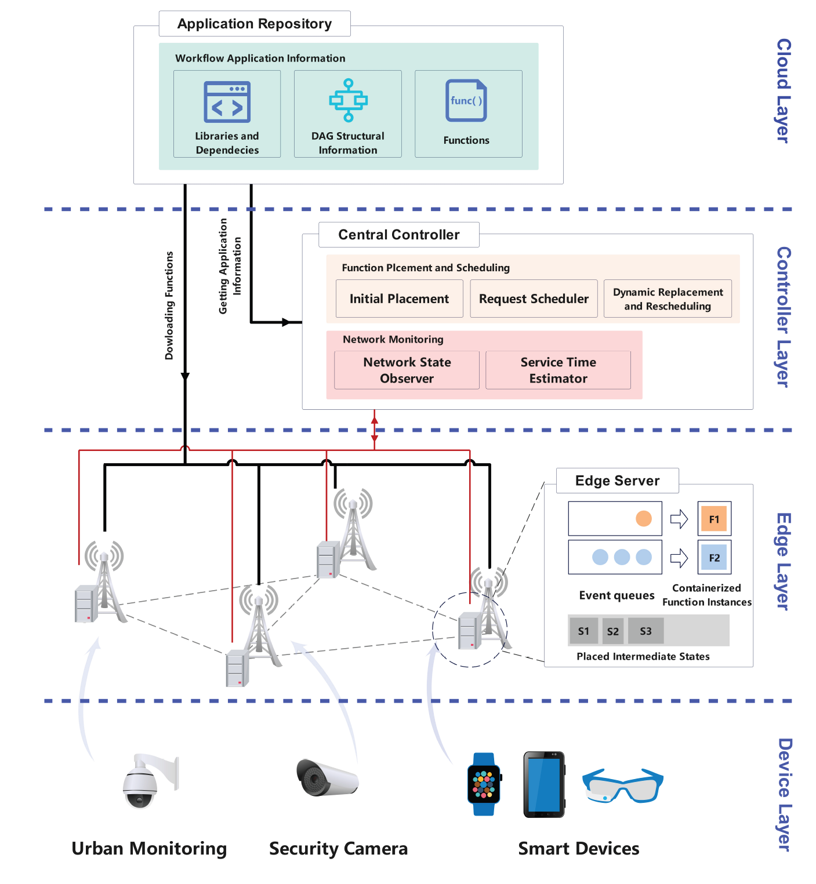
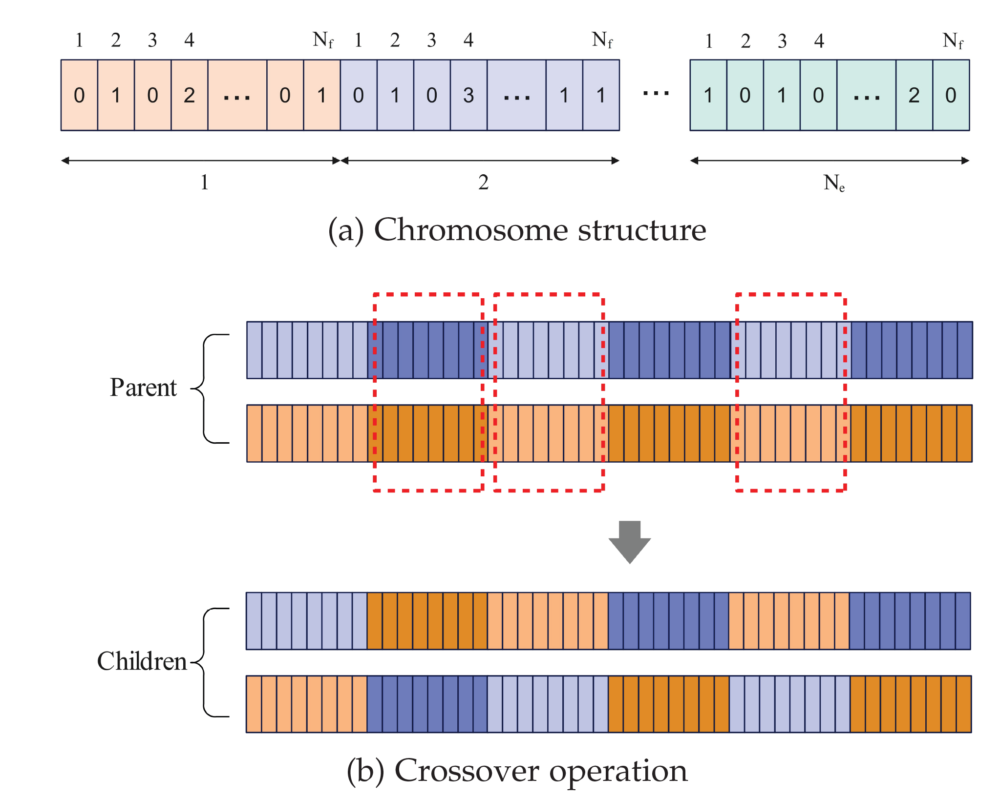
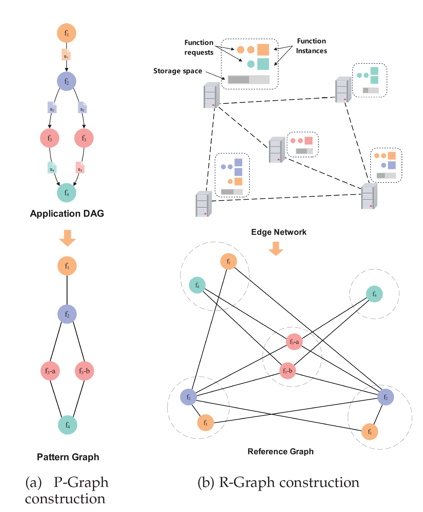
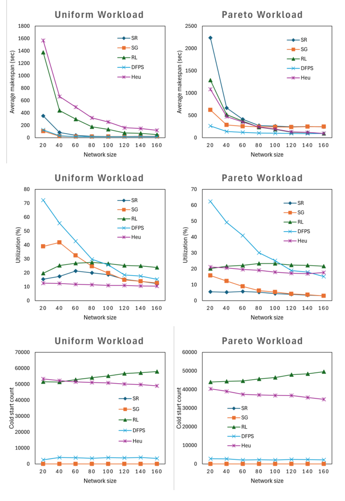
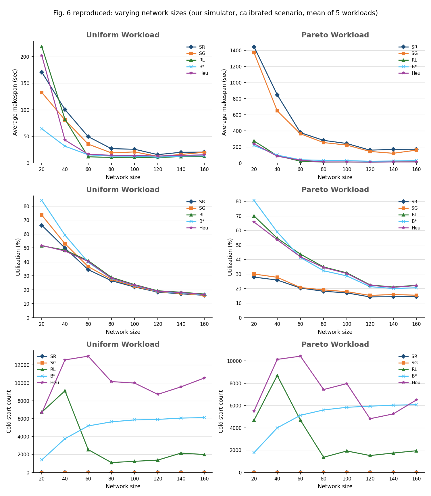
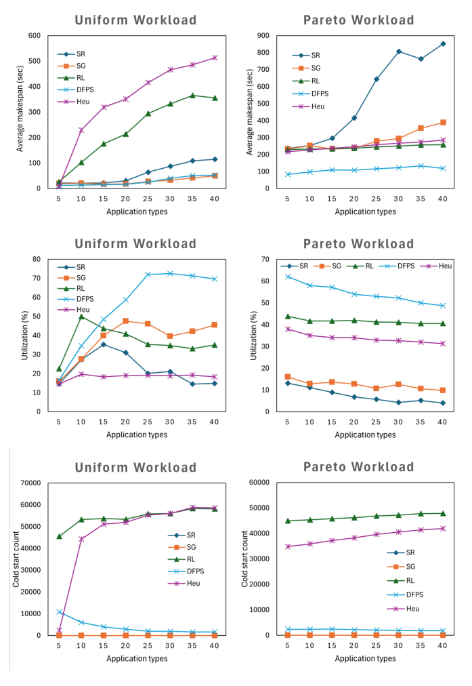
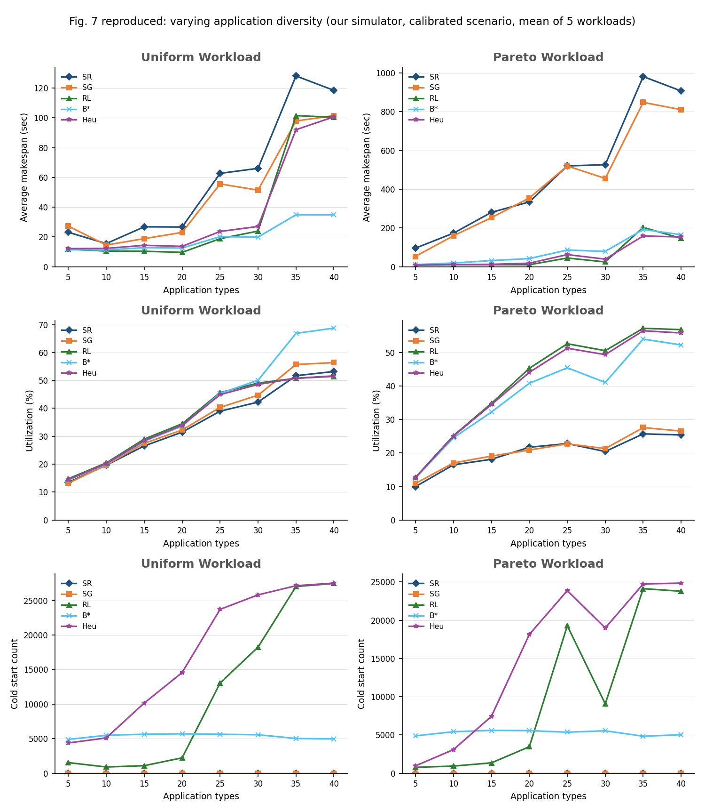

DFPS headroom studydraft for discussion
Where can DFPS still be improved?
We tested three ideas for improving DFPS, a method that places and schedules serverless workflows on edge servers. For each idea, we asked: how much better could it get if we knew the future?
Status: 24 Oct 2026Final controller: re-layout every 60 s + request moves every 4 s, no B* · validated on 42 held-out cases · overload, elastic, timing and robustness tests · admission round 2 and other-dispatcher tests runningData: Azure 2019, Huawei 2023, synthetic
The paperZolfaghari et al., IEEE TSC 2025
DFPS in one picture: plan once, match every request, adjust every few seconds
The setting. 80 edge servers, each with room for 5–25 function containers and 10–30 GB of storage, joined by a network (data moves at 50 MB/s per hop). Applications are workflows: small graphs of serverless functions, where each step hands its output (10–50 MB) to the next. A central controller decides everything. The goal is a short makespan: the time from a request's arrival to its last step finishing.
The problem DFPS targets. Earlier methods decide placement and scheduling separately for every request. Under heavy traffic that causes many cold starts (2–10 s to start a container) and little reuse of running containers. DFPS splits the job into three parts that work at different time scales.
 A workflow: five functions; each arrow hands an intermediate state (s1–s4) to the next step, and f3 and f4 can run in parallel. Fig. 1 (Zolfaghari et al., 2025).
A workflow: five functions; each arrow hands an intermediate state (s1–s4) to the next step, and f3 and f4 can run in parallel. Fig. 1 (Zolfaghari et al., 2025).

The architecture: the central controller holds the three DFPS parts; each edge server keeps one event queue per function, its warm containers and the stored states. Fig. 2 (Zolfaghari et al., 2025).
Once, before any request1 · Initial function placementDecide how many containers of each function go on each server (NSGA-II, a genetic algorithm).
For every arriving request2 · Request schedulingChoose which running container serves each step of the workflow (graph pattern matching).
Every 4 seconds3 · Dynamic replacement and reschedulingSwap a few containers between functions and move waiting requests (simulated annealing). This is DFPS's auto-scaling.
The next three slides walk through each part on a small example. Numbers in the examples are made up to show the logic.
Part 1initial function placement
1 · Initial placement: functions close to every server, in the right amounts
Before traffic starts, DFPS fills every container slot. NSGA-II (population 100) breeds candidate layouts and scores each on two goals at once:
Proximity: from each server, how many hops until every function type can be found? Summed over servers. Lower means any step can be run nearby.
Proportionality: how far is each function's container count from its "fair share"? The fair share grows with the function's run time (Eq. 4). Lower means slow functions get more containers.

How a layout is encoded: one block per server, one number per function (how many containers of it run there). Crossover swaps whole server blocks between two parent layouts, so every child still fills each server exactly. Fig. 3 (Zolfaghari et al., 2025).
The search. NSGA-II starts from 100 random layouts, scores each on both goals, keeps the layouts that no other layout beats on both (the trade-off "front"), and breeds new ones by crossover and small mutations. After the last generation it takes the front member with the best combined score. This runs once, offline, before any request arrives.
Example. 4 servers in a row, 3 slots each (12 in total). Functions f1 runs 2 s, f2 4 s, f3 6 s, so their fair shares are 2, 4 and 6 containers.
Layout A · grouped by function
counts 2 / 4 / 6 → share gap 0
hops to see all types: 2 + 1 + 2 + 3 = 8Right amounts, but N4 must send f1 steps 3 hops away.Layout B · same for every server
counts 4 / 4 / 4 → share gap 2 + 0 + 2 = 4
hops: 0 + 0 + 0 + 0 = 0Everything is local, but slow f3 is short of containers.Layout C · mixed (chosen)
counts 2 / 4 / 6 → share gap 0
hops: 0 + 1 + 0 + 1 = 2Fair shares and almost everything within one hop.
How it helps: requests find the functions they need nearby (less data moved) and long-running functions have enough copies (less waiting). Layouts like A are beaten on both goals by C; B and C are a trade-off, and DFPS picks the one with the smallest combined score.
Limits of the initial placement
Limit 1 · demandThe fair share ignores how often a function is called
Fair shares come from run time only (2 / 4 / 6 containers). If f1 is called 3 times a second and the others only 0.5, f1 needs 6 containers (run time × calls per second) but gets 2, so its queue grows without limit, while f3 has 6 containers for 3 containers of work. This is the skewed (Pareto) case; part 3 has to repair it at run time.
f1needs 6 (2 s × 3 req/s)
gets 2
needs 2 (4 s × 0.5 req/s)
gets 4
needs 3 (6 s × 0.5 req/s)
gets 6
needed to keep upgiven by the fair share
Limit 2 · timeIt is computed once, before any traffic
The layout is planned offline and never re-planned. When the mix of traffic changes during the day, the layout still reflects the start. Only part 3's small swaps can move it, one container at a time (slide 5).
09:00 · f1 busyf1 f1 f1 f1 f1 f3 f3 · layout fits
14:00 · f3 busyf1 f1 f1 f1 f1 f3 f3 · same layout, f3 short
Limit 3 · as printed (erratum E1)Fixed in B* · slide 6The fair-share score is always 0
Printed Eq. 3 and Eq. 4 (p. 6):
score = Σf ( FAN(f) − FEN(f) ) FEN(f) = total slots × run time(f) ÷ Σ run times
FAN(f) is the containers f has, FEN(f) its fair share. Every slot holds some function, so the FAN values add up to all 12 slots, and Eq. 4 shares out exactly 12 too: the score is 12 − 12 = 0 for every layout. Surpluses cancel shortages, only the hop count decides, and B (same functions everywhere) always wins. B* uses |FAN − FEN|, so every miss counts and the balanced C wins.
layout B: has − fair
f1: +2f2: 0f3: −2
printed = 0
with |…| (B*)
202
B* = 4
| Layout | Hops | Printed score | B* score |
|---|
| A · grouped | 8 | 0 | 0 |
| B · same everywhere | 0 | 0 | 4 |
| C · mixed | 2 | 0 | 0 |
| Chosen | | B | C |
Part 2request scheduling
2 · Request scheduling: match the whole workflow to running containers
When a request arrives, DFPS turns its workflow into a small pattern graph (steps labelled with their function) and matches it onto a reference graph of running containers. Every possible step-to-server assignment gets a weight:
weight = expected service time at that server (run time + queueing, Eq. 5–6) + data transfer time (hops × MB ÷ 50 MB/s)
The match with the smallest total weight is chosen, and all steps are bound to their servers at arrival.

Pattern and reference graphs: left, the workflow becomes a pattern of function types (f3 appears twice, as f3-a and f3-b); right, the running containers on each server (dashed circles) become a weighted graph. Scheduling picks one container per step so the pattern fits with the least total weight. Fig. 4 (Zolfaghari et al., 2025).
Reading the figure. Each coloured dot on the right is a warm container; edges join containers that could serve consecutive steps, weighted by service time plus the time to move the state between their servers. A match picks one f1, one f2, two f3 and one f4 container that respect the workflow's arrows. The example below does the same with numbers.
Example. A request arrives at N1 for the workflow f1 → 30 MB → f2 → 30 MB → f3 (each hop of 30 MB takes 0.6 s). N1's f2 container already has a queue.
N1 · request arrivesf1f2f3
f2 queue: 3 waiting ———
Match 1 · all on N1
f1@N1 2.5 + f2@N1 9.0 (queue) + f3@N1 6.3
transfers 0 → total 17.8 sNo data moves, but f2 waits behind 3 requests.
Match 2 · f1 on N1, f2 and f3 on N2 (chosen)
f1@N1 2.5 + 0.6 transfer + f2@N2 4.2 + f3@N2 6.5
→ total 13.8 sOne short transfer avoids the queue; f3 runs where f2's output already is.
Match 3 · all on N3
input 2 hops 1.2 + f1@N3 2.2 + f2@N3 4.5 + f3@N3 6.4
→ total 14.3 sIdle, but the request's input must travel 2 hops first.
How it helps: it weighs queueing against data movement for the whole workflow at once and only uses containers that are already running, so requests avoid busy containers without paying cold starts.
Limits of request scheduling
Limit 1 · supplyIt can only use containers that already exist
Matching chooses where to run each step, not how many containers there are. If f2 has one copy in the whole network and 5 requests are waiting for it, every possible match waits behind those 5. Adding f2 containers is left to part 3.
—N2f2f3
f2 queue: 5 waiting — The only f2 copy is on N2: every match pays its queue.
Limit 2 · objective (erratum E5)It adds up all steps instead of following the slowest path
The weight is the sum over steps, but steps on parallel branches run at the same time, so the request finishes when the slowest branch ends. Example: after f2, f3 and f4 run in parallel. Match X takes 8 s and 8 s (sum 16, done after 8 s); match Y takes 4 s and 11 s (sum 15, done after 11 s). DFPS picks Y because 15 < 16, although X finishes 3 s earlier.
Match Xsum 16 · finishes after 8 s
Match Y (chosen)sum 15 · finishes after 11 s
Limit 3 · timingThe whole workflow is fixed when the request arrives
All steps are assigned at arrival, using the queues as they are at that moment. If a queue builds up later at a server chosen for a later step, the request still goes there; only part 3's relocation can move it afterwards.
t = 0 s · planf3 → N2 (queue empty)
t = 10 s · f3 readyN2 now has 6 waiting; the request queues anyway
Limit 4 · as printed (erratum E2)Fixed in B* · slide 6The waiting-time estimate is missing a term
The service-time part of each weight comes from Eq. 6, the textbook M/M/c (Erlang-C) formula without the factor P0, the probability that the system is empty. The paper also defines μ as a run time but uses it as a rate. B* uses the full formula with μ = 1 ÷ run time.
| Requests at a function with c containers |
|---|
| Printed (Eq. 6) | (λ/μ)c λ μ ÷ [(c−1)! (cμ − λ)2] + λ/μ |
| B* | P0 · (λ/μ)c λ μ ÷ [(c−1)! (cμ − λ)2] + λ/μ |
λ = arrivals per second, μ = services per second per container. P0 is below 1, so without it the waiting part is overestimated, and by different amounts at different servers, so the weights compare servers incorrectly.
Part 3dynamic replacement and rescheduling
3 · Dynamic replacement: shift containers to busy functions, a few at a time
Every 4 s, DFPS runs simulated annealing (Alg. 2): about 100 small trial changes, each built by Alg. 1, kept if it helps (and sometimes even if it doesn't, early on, to escape dead ends). One trial change:
Pick a server and its least-used containerA random server es; on it, the function with the fewest recent requests (fr).
Replace itTurn that container into a random function fn (it needs a cold start). The total number of containers never changes.
Re-home and pull requestsIf fr lost its last copy here, move its waiting requests to the best other server. Then pull waiting fn requests from nearby servers if they would finish sooner here (relocation gain > 0, Eq. 8).
Score the trialScore = total time saved by all moved requests. Better trials are kept; the "temperature" falls, so later trials must really help.
Example. f3 has become busy at N3; N2 has an f1 container nobody is using.
Before
—N3f1f2f3
f3 queue: 4 waiting
~18 s until done After one kept trial
N2f3f3f3
new f3: 4 s start-up
+2 requests pulled —N3f1f2f3
f3 queue: 2 waiting
gain ≈ 2 × 7.4 = 14.8 s → kept
How it helps: this is DFPS's auto-scaling. With a fixed number of containers, it keeps moving slots from idle functions to busy ones and moves waiting requests to where they finish sooner. That is why DFPS beats the static layouts under skewed (Pareto) traffic.
Limits: where our study starts
Limit 1 · speedOne container per trial, so big shifts are followed slowly
Each trial swaps a single container, and only a few trials are kept per 4 s round. If traffic suddenly needs 6 more f3 containers, DFPS adds them about one at a time while the queue keeps growing. This is the gap that D1 measures.
Illustration: solid = f3 containers added, dashed = still missing, if one useful swap is kept per round.
Limit 2 · aimThe new function is picked at random
The container is turned into a random function, not the one with the longest queue. With 30 functions and one of them overloaded, a trial hits the right one about 1 time in 30 (about 3 of the ~100 trials per round). The rest are wasted or rejected.
30 functions; the outlined one is overloaded. A random pick lands on it with probability 1/30 ≈ 3%.
Limit 3 · overloadIt never turns requests away
When more work arrives than all containers can do, swapping containers cannot help: every request is accepted and the queue grows without limit, so almost nothing finishes on time. This is the gap that D2 measures.
Illustration: requests waiting during an overload (one bar segment = 4 requests).
Limit 4 · as printedFixed in B* · slide 6Two bugs in the printed algorithms (fixed in B*)
Followed literally, the search never undoes a bad trial, and moved requests end up in the wrong queue. Our baseline B* fixes both, so our results compare against the method as intended.
| Erratum | As printed | Effect | B* |
|---|
| E3 · Alg. 2, l. 8 | undo a worse trial if random ≥ e−Δ/T | the threshold is above 1, so a worse trial is never undone | keep a worse trial with probability eΔ/T; return the best found |
| E4 · Alg. 1, l. 23 | a pulled fn request goes into fr's queue | wrong function's queue; the request also stays in its old queue | goes into the new fn queue and leaves the old one |
Backgroundstarting point
The starting point: DFPS, rebuilt as B*
B* is our own simulation of DFPS (slides 2–5). Followed literally, the paper's method has four errors that stop it from working as intended. B* fixes each one and changes nothing else.
Two formula errors
E1 · formula · slide 3Missing absolute value
- where
- Eq. 3, p. 6 (initial placement)
- as printed
- Σ (has − fair share): surpluses cancel shortages, so the score is 0 for every layout
- B*
- Σ |has − fair share|: every miss counts
- effect
- placement now balances container amounts, not only closeness
E2 · formula · slide 4Missing term in the queueing formula
- where
- Eq. 6, p. 7 (scheduling weights, annealing)
- as printed
- Erlang-C without P0; μ defined as a run time but used as a rate
- B*
- full Erlang-C with P0; μ = 1 ÷ run time
- effect
- waiting times estimated correctly, so servers are compared fairly
Two algorithm errors
E3 · search · slide 5Keep/undo test in the annealing
- where
- Algorithm 2, lines 3–14
- as printed
- a worse trial is undone if random ≥ e−Δ/T, which is never (threshold above 1); returns the last layout
- B*
- keep a worse trial with probability eΔ/T; return the best layout found
- effect
- the search can no longer drift to worse layouts
E4 · replacement · slide 5Requests filed in the wrong queue
- where
- Algorithm 1, lines 9, 16, 23
- as printed
- a pulled fn request is added to fr's queue and not removed from its old one; es′ starts empty
- B*
- goes to the new fn queue, leaves the old one; es′ gets a start value
- effect
- every request is in exactly one queue (checked after each step)
The fixes make DFPS stronger, so the improvements we report in D1–D3 are on the safe side.
Backgroundwhy B*, in numbers
Why we use B*: the printed method fails one of the paper's own claims
We ran both versions on the paper's own setup: 80 servers, 15 Alibaba workflows, Uniform and Pareto traffic, arrival rate ×0.25 to ×2, 10 workloads per point (80 workloads, each run with SR, SG and DFPS). Then we checked the three claims the paper makes about its results.
| Paper's claim | As printed | B* |
|---|
| (i) Makespan rises with the arrival rate, for every method, Uniform and Pareto | holds | holds |
| (ii) Under Pareto traffic: DFPS < SG < SR (mean makespan) | fails at 3 of 4 rates | holds at all 4 |
| (iii) SR and SG have no cold starts | holds | holds |
| Claims reproduced | 2 of 3 | 3 of 3 |
Why claim (ii) fails as printed: SG is no better than random placement
| Pareto, mean makespan (s) | ×0.25 | ×0.5 | ×1 | ×2 |
|---|
| SR · random placement | 282 | 599 | 1193 | 2142 |
| SG as printed (Eq. 3 always 0, E1) | 274 | 600 | 1240 | 2166 |
| SG in B* (|…|) | 250 | 543 | 1130 | 2054 |
With the printed Eq. 3 the placement only optimises closeness (slide 3), so SG ends up as slow as, or slower than, a random layout. With the absolute value it is clearly better than random at every rate, as the paper reports.
DFPS itself: as printed vs B* (mean makespan, seconds)
Uniform ×0.2530 → 30 s (−1 ± 0)Uniform ×0.542 → 40 s (−2 ± 1)Uniform ×197 → 81 s (−16 ± 4)Uniform ×2275 → 227 s (−48 ± 6)Pareto ×0.2553 → 51 s (−2 ± 1)Pareto ×0.5122 → 103 s (−19 ± 4)Pareto ×1291 → 244 s (−47 ± 4)Pareto ×2578 → 508 s (−70 ± 8)
DFPS as printedDFPS in B*(difference ± standard error over 10 paired workloads)
B* is faster at every point and the gap grows with load: up to 48 s (Uniform) and 70 s (Pareto) on the mean, and 535 vs 647 s for the slowest 1% at Pareto ×1. At low load the two are within a second or two, because there is little for the search to fix.
How we check the implementation
Comparison versionThe method as printed, kept alongside
We also run DFPS with the printed Eq. 3, Eq. 6 and keep/undo test (E1–E3). E4 and the time/rate reading of μ are fixed in both versions, because the printed lines cannot run at all. So "as printed" means: printed maths, runnable algorithms.
Tests81 automated tests
- queueing
- our simulator against the textbook M/M/c formula: 9 cases, 106 requests each, largest error 3.2%
- Little's law
- requests in system = arrival rate × time in system, error ≤ 0.001%
- bookkeeping
- every server always holds exactly its number of containers, stored data never exceeds its storage, container counts match the containers that exist
- repeatable
- the same seed gives exactly the same run, checked by a fingerprint of every event
Source: G2 reproduction gate (output/data-analysis/results/g2_reproduction.json) and validation (g2_validation.json). At ×2 the static methods leave some requests unfinished, so their means there are slightly optimistic.
The paper's workloadsUniform vs Pareto
Uniform and Pareto: the same applications, very different traffic
In both workloads each of the 15 applications receives requests as a random (Poisson) stream with its own average rate. They differ only in how the rates are spread across applications (DFPS paper, Sec. 5.1, p. 9). The x-axis "request rate" of Fig. 5 multiplies every application's rate by 0.25 to 2.
Uniform: every application about equally busy
Each application's average time between requests is drawn between 200 and 700 ms, so it gets 1.4–5 requests per second.
15 applications, example draw · total ≈ 42 req/s · busiest app ≈ 12% of traffic
Pareto: a few applications get almost everything
About 20% of applications (3 of 15) are busy, 50–100 ms between requests (10–20 req/s); the rest are quiet, 2–4 s between requests (0.25–0.5 req/s).
same scale · total ≈ 48 req/s · 3 busy apps ≈ 91% of traffic
requests per second of one applicationone of the few busy applications (Pareto)(example draw from the paper's ranges, rate ×1)
| Uniform | Pareto |
|---|
| Load across functions | balanced: every function used about equally | concentrated: the functions of 3 workflows carry ~90% of the work |
| A static layout (SR, SG) | fits well, because containers are spread evenly anyway | misfits: busy functions are short of containers while most others sit idle (low utilization, long queues) |
| DFPS / B* | little to adjust: in the paper about as good as SG (in ours B* still wins at high load) | clearly better than SG and SR: its swaps move containers to the busy functions |
| On-demand methods (Heu, RL) | no advantage from flexibility | start containers exactly where the busy workflows need them, so they follow the skew fastest |
Pareto is the case that rewards adapting capacity to demand, which is why the methods separate most there (slides on Figs. 5–7 and the baseline comparison).
Reproductionsetting
Reproducing the paper's Figures 5–7 with B*
The paper leaves several workload choices open. Run as we first read them, our static methods were 4–20× slower than in the paper, although the rankings matched. We therefore calibrated only those open choices against Fig. 5, and kept Figs. 6 and 7 aside as an independent check.
| Open choice | First reading | Calibrated | Why |
|---|
| Which Alibaba workflows | jobs < 60 s with ≥ 2 tasks (chains ~3 tasks deep) | jobs < 60 s whose longest chain is ≤ 2 tasks | at low load the paper's makespan is ~11 s; ours was ~21 s of pure execution |
| Task → function mapping | tasks share a pool of 30 functions | each task is its own function | sharing overloads a few functions while others idle |
| Load, servers, run times, capacities | Table 2, unchanged | not tuned |
| Algorithm under test | B* (slide 6), unchanged; the paper's curves are the authors' DFPS | not tuned |
Same 80 servers, 15 workflows (Figs. 5–6) or 5–40 (Fig. 7), Uniform and Pareto traffic, 5 workloads per point (the paper used 10), 1,100 runs in total. All five methods run on exactly the same workloads.
Calibration details: output/data-analysis/calibrate_fig5.py and log entries of 17–18 Oct 2026. The paper's figures are reproduced here for internal comparison only.
Workflow structurewhat is actually scheduled
Important: the shallow workflows on the last slide are only used to reproduce Figs. 5–7
The last slide restricted workflows to a chain of at most 2 tasks, which made most of them single tasks. That restriction was needed only to match the paper's own numbers. Every other result in this deck — B* vs RL vs Heu, D1, D2, and D3 / O3S (the headroom and busiest-first results) — uses a richer, unrestricted set of workflows, measured below.
Two terms used here. Task count = how many steps a workflow has in total. Depth = the longest chain of steps that must run one after another (steps running in parallel at the same stage count once); depth is what makes something genuinely a "workflow" rather than a single task.
| Measured across the 90 test cases | Minimum | 25th percentile | Median | 75th percentile | 90th percentile | Maximum |
|---|
| Task count (steps per workflow) | 2 | 3 | 5 | 10 | 16 | 62 |
| Depth (longest sequential chain) | 2 | 2 | 3 | 4 | 7 | 12 |
| Width (steps running in parallel at once) | 1 | 1 | 2 | 5 | — | 27 |
- No single-task workflows: every workflow has at least 2 steps and a depth of at least 2.
- 65% of workflows have a chain of 3 or more sequential steps, so placement and scheduling decisions genuinely have to account for step order and dependencies, not just where to put one task.
Where these 15 workflows per test case come from
7 fixed workflows, present in every run6 real applications from the SeBS-Flow benchmark suite (4 to 19 steps: video processing, trip booking, map-reduce, image processing, machine learning, genome analysis) plus the DFPS paper's own Figure 1 example (5 steps: face detection → duplicate check → thumbnail / indexing in parallel → save result).
8 more, randomly drawn each runSampled from the full Alibaba cluster trace (no depth or task-count restriction), to add variety on top of the 7 fixed ones.
Numbers measured directly from the scenario files used in the D1/D3 test runs (225 workflow instances sampled across 15 test cases). Scripts: dfps/sebsflow.py (the 7 fixed workflows), dfps/traces.py:workflow_mix (how the 15 are assembled).
Reproduction · Fig. 5paper vs our B*
Fig. 5 · varying arrival rates
x-axis: arrival rate ×0.25 (1) to ×2 (8). Rows: average makespan, utilization, cold starts; left Uniform, right Pareto.
 Paper · DFPS as published · Fig. 5 (Zolfaghari et al., 2025)
Paper · DFPS as published · Fig. 5 (Zolfaghari et al., 2025)
 Ours · B* (our corrected DFPS) and the same baselines, calibrated scenario, mean of 5 workloads
Ours · B* (our corrected DFPS) and the same baselines, calibrated scenario, mean of 5 workloads
Matches
- Uniform SR and SG: 11→76 s and 10→55 s vs the paper's 12→74 and 12→67
- Pareto ranking holds at every rate: DFPS < SG < SR in the paper, B* < SG < SR in ours
- makespan rises with the rate for every method
- SR and SG have no cold starts; DFPS and B* have a few thousand
Differs
- Heu and RL are much stronger in ours: as fast as or faster than B*, with 1–26 thousand cold starts (paper: 4–20× slower than DFPS, 35–58 thousand)
- B* stays low at high load (Uniform ×2: B* 19 s vs DFPS 63 s)
- Pareto SR and SG start much lower (31 vs 226 s at ×0.25) and end higher (662 vs 340 s)
- our utilization grows with load; the paper's is flatter
Reproduction · Fig. 6paper vs our B*
Fig. 6 · varying network sizes (held out)
x-axis: 20 to 160 servers at the default rate. Not used for calibration, so this is an independent check.

Paper · DFPS as published · Fig. 6 (Zolfaghari et al., 2025)

Ours · B* (our corrected DFPS) and the same baselines, calibrated scenario, mean of 5 workloads
Matches
- makespan falls as the network grows, steeply from 20 to 60 servers, as in the paper
- Pareto: B* (ours) and DFPS (paper) clearly below SG and SR at every size
- utilization of the adaptive method falls with network size (B* 84→16%, DFPS 72→15% under Uniform)
- SR and SG have no cold starts
Differs
- Heu and RL again much stronger, and far fewer cold starts (1–13 thousand vs 35–58 thousand)
- Uniform at 20 servers: our SR and SG are slower than B* (171 / 132 vs 64 s); in the paper SG is about as fast as DFPS there
- our SR and SG utilization is higher than the paper's
Reproduction · Fig. 7paper vs our B*
Fig. 7 · varying application diversity (held out)
x-axis: 5 to 40 workflow types at the default rate. Not used for calibration.

Paper · DFPS as published · Fig. 7 (Zolfaghari et al., 2025)

Ours · B* (our corrected DFPS) and the same baselines, calibrated scenario, mean of 5 workloads
Matches
- makespan rises with the number of applications overall, for every method
- Pareto: B* below SG and SR throughout (40 apps: 165 vs 811 / 908 s), as DFPS is in the paper
- B* utilization rises with the number of applications under Uniform, as DFPS does in the paper
- SR and SG have no cold starts
Differs
- Heu and RL again much stronger at small numbers of apps; they catch up with SR/SG only at 35–40 apps
- SG gains less over SR than in the paper under Pareto (811 vs 908 s; paper ~390 vs ~850)
- ours rises more steeply from 25 apps on
What is "RL"?the baseline, explained
RL is a dispatching mechanism, not a placement mechanism
"RL" appears throughout this deck as a baseline method. This slide explains what it actually decides, how that differs from DFPS/B*, and how we built it.
Placement vs. dispatching, the distinction used throughout this deck. Placement = deciding in advance how many containers of each function to keep running, and on which edge computer (this is what DFPS/B*, and D1/D3, change). Dispatching = deciding, for one arriving step of one request, which single container handles it right now. DFPS does both (a planned placement, kept up to date by small swaps, plus a scheduler that dispatches each request onto it). RL replaces both with a single on-the-fly decision.
How RL decides, step by step
No planned layoutRL keeps no fixed container counts and does not pre-place anything. Every edge computer starts with empty slots.
One decision per step, when it becomes readyWhen one step of a workflow is ready to run (its dependencies are done), RL picks which edge computer runs it — one step at a time, with no knowledge of the rest of the workflow.
Containers are created and removed on demandIf the chosen computer already has an idle container for that function, it is reused (warm start). Otherwise a new one is started (cold start), or, if the computer is full, its least-recently-used idle container of another function is removed to make room ("aggressive removal of idle instances" — the paper's own term, p. 11).
Learns the mapping from a neural networkA small neural network scores every edge computer for the step about to be dispatched (task details + each computer's current load, queue length, free slots, data-transfer cost); the step goes to the highest-scoring computer.
How we built it: following the paper DFPS itself names as its RL baseline
DFPS cites MOSEC (Yang et al., "Multi-objective deep reinforcement learning for function offloading in serverless edge computing," IEEE Trans. Services Computing 18(1), 2025) as its RL baseline. We reimplemented MOSEC's own method, adapted only where DFPS's system model forced a change (documented line by line in BASELINES_SPEC.md).
| Kept exactly as in the MOSEC paper | Changed, and why |
|---|
| Double Deep Q-Network (DDQN): two copies of a small network (2 hidden layers, 64 neurons each) score candidate computers; the target copy is updated periodically for stable training | Action space = our 80 edge computers specifically (the network scores one computer at a time from its features, so it works for any number of computers) |
| State = step features (data size, run time, cold-start time, output size) + each computer's features (idle container?, free slots, queue length, data-transfer cost, …) | Single objective only: DFPS cares about response time alone, so MOSEC's multi-objective reward collapses to "minimise this step's added delay" (MOSEC also supports cost and other objectives; we did not need them) |
| Reward = the negative change in the request's completion time caused by this one decision | Trained on our workload traces, with a separate held-out test seed, exploration annealed from fully random to almost always picking the best-known computer over training |
| Neighbor-Experience-Replay: training samples are drawn and then filtered to the ones most similar to the current situation, so learning stays relevant to what the network is currently facing | — |
Why this matters for reading the results: RL has no concept of a workflow — it decides one step at a time and cannot plan ahead for steps later in the same request, which is exactly the gap D1 and D3 try to close with planned, workflow-aware placement. It also keeps no fixed capacity, so under light load it is very efficient (containers appear exactly where needed), but under heavy load it pays for constant container creation and removal — the pattern you see throughout the D1/D3 comparison slides (RL strongest at 50% load, weakest at 70–85%).
Implementation: dfps/rl.py (policy and training) and dfps/ondemand.py (the shared on-demand container model also used by the Heu baseline). "Ready" mode in the code name refers to dispatching a step only once it is ready to run, as opposed to planning the whole workflow at arrival time (that is Heu's mode, "plan").
Reproduction · baselinesB* vs Heu vs RL
In our simulator, RL is the strongest method; B* wins only when capacity is tight
All 48 points of Figs. 5–7, calibrated scenario, mean of 5 workloads. Mean = average makespan; P99 = slowest 1% of requests (seconds).
| Best method at each point | by mean | by P99 |
|---|
| RL | 34 of 48 | 32 of 48 |
| B* | 9 of 48 | 10 of 48 |
| Heu | 5 of 48 | 6 of 48 |
B* wins when servers are crowded
| Situation | B* mean / P99 | Heu mean / P99 | RL mean / P99 |
|---|
| Uniform, rate ×2 (Fig. 5) | 19 / 73 | 34 / 138 | 25 / 98 |
| Uniform, 20 servers (Fig. 6) | 64 / 207 | 202 / 893 | 219 / 669 |
| Uniform, 40 apps (Fig. 7) | 35 / 139 | 101 / 556 | 100 / 327 |
| Pareto, 20 servers (Fig. 6) | 218 / 687 | 238 / 1163 | 273 / 846 |
With little spare capacity, B*'s planned and reused containers beat creating containers per request (up to 4× on P99): Heu and RL keep starting and recycling containers.
RL and Heu win when there is room
| Situation | B* mean / P99 | Heu mean / P99 | RL mean / P99 |
|---|
| Uniform, rate ×1 (Fig. 5) | 13 / 52 | 14 / 50 | 10 / 45 |
| Pareto, rate ×1 (Fig. 5) | 32 / 109 | 12 / 46 | 11 / 44 |
| Pareto, rate ×2 (Fig. 5) | 99 / 306 | 62 / 272 | 45 / 140 |
| Pareto, 100 servers (Fig. 6) | 29 / 101 | 12 / 45 | 11 / 46 |
With spare capacity, on-demand methods put containers exactly where traffic is. Under skewed (Pareto) traffic B* is 2–3× slower on P99, because it moves containers one at a time (slide 5, limit 1).
What it means for us: B*'s weakness against RL is exactly the gap our D1 and D3 cheaters exploit: moving capacity to busy functions quickly. A new method should be compared with B*, RL and Heu, and should keep B*'s strength when capacity is tight while matching RL when there is room.
Opposite of the paper, where RL and Heu are 1.5–20× slower than DFPS. Our versions follow the source papers on the paper's workload; the paper's high-load Heu numbers match Heu run with its own "1–5 invocations per function" (Xu et al.), which DFPS's workload does not have. Our RL was trained on the earlier scenario. Retrained on this calibrated workload it was weaker (median P99 about 93 s vs 47 s), so RL's results depend strongly on the training run; we report the better one.
Methodrules set in advance
How we measure the room for improvement
For each idea, we build a "cheating" controller that knows the future. We run it against B* on exactly the same scenarios.
- If even the cheater barely beats B*, the idea is not worth pursuing
- If the cheater wins by a lot, there is a real gap to close
- We also test a simple rule. If it already gets 70% or more of the gain, the idea is too easy to be research
How we decide (fixed before running anything):
- GO at least 25% better, with confidence, in 2 of 3 datasets
- KILL under 10% better in every dataset
- MAYBE anything in between
Datasets: F1 Azure Functions 2019, F2 Huawei Cloud 2023, F3 synthetic traffic changes. Three load levels (50%, 70%, 85%), 10 runs each.
Added after the first results (logged as deviations): (1) the room for improvement is also measured against the best existing method on each case (B*, RL or Heu), not only against B*; (2) every cheater is a lower bound on what is possible: the true best controller could be even better, so a weak cheater can understate the gap but never overstate it; (3) when the first cheater of an idea was flawed, we built a corrected one and kept both results on record.
Datathree kinds of request traffic
Where the request traffic comes from
Azure (F1)Real traffic from Microsoft Azure Functions, 2019 (Shahrad et al., 2020): how many times each function was called, minute by minute, over 14 days.Character: smooth. Traffic changes slowly, with a real shift only about once every 5 hours.
Huawei (F2)Real traffic from Huawei Public Cloud, 2023, in the same per-minute format.Character: jumpy. In about half of all minutes, traffic differs by a factor of 2 or more from the average of the previous 10 minutes. Much of this is short, random up-and-down, not lasting shifts.
Synthetic (F3)Made-up traffic with one controlled kind of change. The total amount of traffic stays constant. Every 10 minutes, which workflows are popular is reshuffled at random: a few become very popular, most stay quiet.Character: sudden, clean jumps in where the load goes, with no change in how much load there is.
- How real traces are used: we take the 200 busiest functions, pick 15 at random, and let each one drive the traffic of one of our 15 workflows
- All traffic is scaled to the chosen load level (50%, 70% or 85% of total capacity); requests within each minute arrive at random
- Only the first 60% of each trace is used now; the last 40% is kept unseen for the final evaluation
- Overload tests (D2): real traces use 15-minute windows around a minute above capacity; synthetic traffic gets one spike of 2–10 minutes at 120% or 150%
Ideasthree tests
Three weak spots of DFPS, three tests
| Idea | Weak spot | What we change | The cheater | We measure |
|---|
| D1 Rearrange before the rush | DFPS adapts slowly when traffic changes | Occasional big rearrangements of the containers, at the right moment | O1: plans every rearrangement in advance, knowing the real future traffic | Slowest 1% of response times (P99) |
| D2 Say no when overloaded | DFPS accepts every request, even when servers are swamped | Reject some requests so the rest finish on time | O2H: picks the best rejection rule after seeing the whole run | Requests finished on time, per second |
| D3 Place with dispatch in mind | Placement ignores how requests will be sent to containers | Pick layouts by running DFPS's own scheduler on the coming requests | O3S: tests 5 layouts by simulating the next 120 s of real requests | Slowest 1% of response times (P99) |
D1 mechanismhow the cheater works
D1: why rearranging at the right moment helps
The weak spot. DFPS adapts with simulated annealing: every few seconds it tries to swap one container at a time for a better one. When traffic suddenly shifts to another workflow, the busy functions need many more containers at once. One-by-one swaps catch up slowly, so queues build in the meantime.
containers neededB*: one swap at a timecheater + B*: one big move at the shift
Illustration with made-up numbers, not measured data.
Cut time into 10 s slotsThe cheater (O1) sees the real traffic of every slot in advance.
A target layout per slotBusy functions get containers in proportion to their work; functions that exchange data are placed close together.
Plan the movesAt each slot boundary: keep the layout, or switch to the slot's target. It switches only if the expected queueing saved beats the container start-up cost. Planned for the whole run at once.
Run on top of DFPSThe planned switches are applied; DFPS's own small swaps keep running in between (O1 + B*).
Why it improves: capacity moves to the functions as soon as they get busy, in one big step, instead of after their queues have formed or one container at a time. A perfect forecast fed into DFPS's swaps does not help, because the problem is the size of each move, not missing information.
D1 examplethe cheater, step by step
D1 example: two workflows, 8 containers, one minute
Workflow A is busy for the first 30 s, then traffic moves to workflow B. A layout either suits A (6 containers for A, 2 for B) or suits B (2 for A, 6 for B). Each cell shows the layout during that 10 s slot and its cost in queueing; moving 4 containers costs 15 (start-up time).
container for Acontainer for Blayout does not suit the traffic: long queuesslot where containers are moved
- Never switch: fine for 30 s, then B's requests queue for 30 s (cost 195)
- React after the queue appears (like the simple rule): one bad slot before the move helps (cost 100)
- DFPS's one-swap-at-a-time: the layout drifts towards B over several slots, with queues all the way (cost 142)
- The cheater compares every possible "switch at slot k" plan with the real future traffic and picks the cheapest: move at 30 s, the moment B gets busy, instead of 10 s later after the queue has formed (cost 45)
- It would not switch for a 10 s blip: 15 for moving is more than one bad slot saves
- Real runs: 80 nodes, 30 functions, 90 slots, many partial layouts; same logic
Made-up numbers chosen to show the logic; costs are in arbitrary units.
D1 resultMAYBE
D1: rearranging at the right time cuts slow responses by 23–42%
average, with 95% rangemedianGO line: 25%
- Huawei data: 42% better, clearly above the GO line
- Azure data: 23% better, just below the line
- Synthetic data: almost no gain
- 29 of 30 cases improve on Azure and on Huawei, so it is not driven by a few lucky runs
- Measured against B* only. Against the best existing method the picture splits by load (slide 30): at 50% load RL already reaches this level, so D1's cheaters mostly lose there; at 70–85% load they still win in 20 of 20 cases on Azure and 18 of 20 on Huawei, by 20–39% on average
D1 detailHuawei data, slowest 1% of responses, in seconds
Knowing the future only helps if you rearrange
| Load | B* | Cheater + B* | Cheater alone | B* with perfect forecast | Simple rule |
|---|
| 50% | 371 | 244 | 442 | 468 | 444 |
| 70% | 645 | 322 | 754 | 885 | 818 |
| 85% | 895 | 454 | 907 | 1299 | 1131 |
- Cheater + B* wins: it makes a few big rearrangements at the moment traffic changes, and DFPS fine-tunes in between
- Giving DFPS a perfect forecast makes it worse. Its small steps can't move enough containers in time
- The simple rule reacts after traffic changes. By then the queues have already built up
- The cheater alone, without DFPS underneath, also loses
What each column knows, and what it does with it
| Column | What it knows about the future | What it does with it | Size of its moves |
|---|
| B* | nothing (observed traffic only) | every 2–8 s (4 s on Azure): runs 100 trial swaps of one container each and keeps the accepted ones (about 75 containers change per round in our runs), judged on the traffic seen so far | small per trial, but many per round |
| Cheater + B* | the real traffic rate of every 10 s slot of the whole run | plans a handful of complete re-layouts in advance (a dynamic program that trades queueing saved against container start-ups) and applies them at the planned moments; B*'s swaps keep running in between | large: the whole layout changes in one step |
| B* with perfect forecast | the same real rates, for the next 4 s round | only feeds them into B*'s swapping: B* uses the true upcoming rates instead of the recent ones when it estimates waiting times and picks which container to replace. No re-layouts | small: still one container per trial |
| Cheater alone | as Cheater + B* | the planned re-layouts only, no B* swaps | large, but nothing fine-tunes in between |
| Simple rule | nothing | runs B*'s swaps as soon as traffic changes by more than 30% | small |
The difference in one line: both get the same future knowledge, but Cheater + B* uses it to move a lot of capacity at once, at the right moment, while B* with perfect forecast uses it only to judge B*'s one-container swaps better. The forecast was never the bottleneck; the size of each move was (slide 17).
D2 mechanismhow the cheater works
D2: why turning some requests away helps the rest
The weak spot. DFPS accepts every request. When more work arrives than the servers can do, the queue keeps growing. Every request then waits behind all the earlier ones, so almost nothing finishes within its deadline (3× its time on an idle system).
accept everything (B*)reject above a limitlimit
Illustration with made-up numbers, not measured data.
Simple ruleAccept a new request only while the requests in the system are at most θ × the number of containers (θ = 1). Otherwise reject it at once.
Cheater (O2H), stage 1Run the whole scenario with θ = 0.5, 1 and 2, then keep the best in hindsight.
Cheater, stage 2Re-run: also reject requests that missed their deadline last time, and let back in rejected ones that arrived when there was room. Keep the best run.
ScoreRequests finished on time, per second. Rejected requests count as not finished.
Why it improves: with a short queue, admitted requests start almost at once and finish on time. Turning away the excess costs a few requests but saves all the others. A fixed limit already gets most of this, which is why D2 alone is not new enough.
D2 examplewhat θ is, step by step
D2 example: 4 containers and a 30-second spike
What is θ (theta)? It sets how full the system may get before new requests are turned away:
accept a new request only if
requests waiting ≤ θ × number of containers
θ = 1 with 4 containers: at most 4 may wait. θ = 2: at most 8. Small θ is strict, large θ is lenient, θ = ∞ is DFPS (accept everything). In the experiments the count is taken over all container slots of the 80 nodes.
The toy setup. 4 containers; each request takes 10 s, so 4 requests are served per 10 s slot, oldest first. A request is on time if it finishes within 20 s of arriving. Arrivals per slot: 3, 4, then a spike of 8, 8, 8, then 3, 2, 2 (38 in total).
Each cell shows what happens in that slot: the requests served (at most 4, oldest first) and the requests still waiting at its end. Solid dots arrived in this slot; dashed dots are left over from earlier slots.
arrived this slot, served on timeleft over from earlier, served on timeleft over, served latearrived this slot, still waitingleft over, still waitingturned awayspike
- Accept everything: during the spike 8 arrive but only 4 can be served, so the queue grows by 4 every slot. From 50 s on, every request served has waited too long: 19 on time, 19 late
- θ = 1: the queue never exceeds 4, so everyone admitted is on time; but 12 are turned away, some of whom could have made it (26 on time)
- θ = 2: a queue of up to 8 is still short enough to clear within 20 s, so it serves the most: 30 on time, 8 turned away, none late
- Too strict wastes capacity, too lenient makes everyone late. The cheater (O2H) tries θ = 0.5, 1 and 2 on the real run and keeps the best; on time for every θ: 0.5 → 16, 1 → 26, 2 → 30, 3 → 22, ∞ → 19
Made-up numbers chosen to show the logic. In the real runs a request is on time if it finishes within 3× its time on an idle system. A turned-away request is never served: it counts as not finished on time (next slides).
D2 resultMAYBE · lowered
D2: rejecting requests triples on-time work, but a simple rule gets most of it
B* (accepts everything)Simple ruleCheater (O2H)
- When overloaded, B* almost stops working: on Huawei data the slowest responses take over 30 minutes
- A simple rule ("reject when the queue is full") gets 71–80% of the possible gain
- The cheater adds only about 10–27% on top of the simple rule
- The cheater's advantage came only from picking a stricter fixed limit
What happens to the requests that are turned away?
A rejected request is answered immediately and never runs. In our simulator it counts as not finished on time, exactly like a request that is accepted but finishes late. So rejecting does not hide failures: it only changes how many requests finish on time. Here is the fate of every arriving request (simple rule, θ = 1, mean over the cases):
| Dataset | Method | On time | Accepted but late | Turned away | P99 of the accepted (s) |
|---|
| Azure | B* (accepts all) | 10% | 90% | 0% | 780 |
| Simple rule | 28% | 26% | 46% | 197 |
| Huawei | B* (accepts all) | 3% | 97% | 0% | 1960 |
| Simple rule | 10% | 17% | 72% | 250 |
| Synthetic | B* (accepts all) | 12% | 88% | 0% | 907 |
| Simple rule | 31% | 24% | 46% | 225 |
- Yes, rejection costs something: 46–72% of the requests get no service. In a real system they would need a fallback (retry later, offload to the cloud, or an error), which our simulator does not model.
- But under overload most requests miss their deadline anyway: accepting everything, only 3–12% finish on time. Turning away the excess lets 2–3 times as many finish on time (10→28%, 3→10%, 12→31%).
- The P99 column is flattering: it covers only the accepted requests, so a lower P99 is partly because the slowest requests were never accepted. That is why D2 is judged by on-time requests per second, which counts every arriving request, not by P99.
- A request rejected immediately also costs the caller far less than one that waits many minutes behind a queue and still misses its deadline (B*'s P99 is 13–33 minutes here).
Our first cheater (O2) had a design flaw: it never let rejected requests back in. We replaced it with O2H and recorded the change.
D2 insightwhere the capacity goes
The problem is containers in the wrong place during traffic spikes
| Dataset | Work arriving vs. total capacity | Requests rejected | Servers busy |
|---|
| Azure | 0.8–1.0× | 53% | 41% |
| Huawei | 0.7–2.3× | 76% | 29% |
| Synthetic | 0.9–1.3× | 55% | 47% |
In total, there is roughly enough capacity for the work. Yet the best controller rejects more than half the requests while most servers sit idle. During a spike, a few functions are swamped while containers of other functions wait. Fixing this means moving containers in time, which is exactly idea D1.
D3 mechanismhow O3S works
D3: choosing layouts by how requests will really be served
The weak spot. DFPS never tests a layout by running its own scheduler. It scores layouts with proxies and formulas, so it cannot see which copy the scheduler would really send each request to, where queues form, how much data moves, or what a change costs in container start-ups.
How D3 addresses it
DFPS · initial placementjudged by proxiesHops until every function can be found, and a fair share of containers by run time. The scheduler is never run; traffic and queues are invisible.
Paper: Sec. 4.1, pp. 5–6, Fig. 3, Eq. 3–4 (the two objectives an evolutionary search ranks placements by).
DFPS · annealing, every 2–8 sjudged by a formulaOne container per trial, 100 trials per round (our setting, the paper leaves it open); a trial is scored by the waiting time a queueing formula predicts (steady traffic, even split over containers). The scheduler is never run.
Paper: Sec. 4.3, pp. 7–9, Alg. 1–2, Eq. 5–8 (the queueing-theory estimate that scores each trial swap, and the rule that accepts or rejects it).
D3 · O3Sjudged by running the schedulerEach candidate layout is tried in a copy of the system, and DFPS's real scheduler routes the real upcoming requests over it for 2 minutes. The score therefore already contains the scheduler's choices: queues, data transfers, start-ups and backlog.
The paper never says "proxy" or "formula" — that is our description of what these equations do: they estimate what would happen (hop distance, predicted waiting time) instead of observing what the scheduler actually does with real, bursty requests.
What D3 does not change: the scheduler itself. DFPS does not become "aware"; the layouts it considers are simply judged by the result the scheduler would really produce. A queueing formula was tried first, and its score was close to random (it assumes steady traffic spread evenly over containers, which bursty workflows break; it made the system 3.6–6.5× slower than B*), which is why layouts are now judged by replay.
Example. Two layouts with the same number of containers of every function, differing only in where the f2 containers sit: in layout X they are 3 hops from f1's, in layout Y 1 hop. A proxy or formula sees the same counts. Replaying the real requests sees that in X every request moves its data 3 hops and the f2 queue sits at a far node, and scores X clearly worse than Y (illustration, made-up numbers: 410 vs 330 request-seconds).
The four steps, every 60 s
Build 5 optionsKeep the layout, plus four candidate layouts (next slide).
Copy the live systemAn exact copy for each option: queues, containers, data in transit.
Play 120 s forwardApply the option in the copy (paying its container start-ups) and replay the real upcoming requests with DFPS's scheduler.
Score and switchScore = total time requests spend in the system. Switch if the best option scores at least 2% below "keep". DFPS's own swaps continue.
Why it improves: the score sees what proxies and formulas miss (bursts, backlog, data locality, the start-up dip) and, looking 120 s ahead, also the payoff of a move. So capacity moves to where requests will really queue.
A deployable version would need a predicted future instead of the real one, and a fast simulator or a learned stand-in for the replay (the replay costs 1–2 hours per 15-minute run here). Both are open questions.
D3 mechanismthe five options
The five options built every 60 seconds
- 1 · Keep. No change. Every move has to beat doing nothing by at least 2%.
- 2 · Data-affinity layout. Container counts proportional to the work expected in the next 2 minutes (true request rate × run time per function); copies placed greedily so functions that exchange the most data per second sit on nearby servers. It follows the rates and the data, not today's queues.
- 3 · "Busiest first" layout. Counts sized for the coming work plus the backlog already waiting (backlog × run time ÷ 120 s), so no function runs above 80% busy; leftover slots go in proportion to work; then placed by data affinity as in option 2. If 80% cannot be met everywhere, counts are shrunk proportionally.
- 4 · Half-way to option 2. Apply about half of the container replacements needed to reach the data-affinity layout (the largest imbalances first, server by server, never removing a function's last copy). Fewer start-ups, slower correction.
- 5 · Half-way to option 3. The same, towards the busiest-first layout.
- Cost of a move: every container that changes function must cold-start (2–10 s). The replay includes it, so a move wins only if its payoff within 2 minutes is larger.
Worked example (simplified, made-up numbers)
12 container slots, three functions. Now: 5 × f1, 4 × f2, 3 × f3. Next 2 minutes: expected busy containers f1 = 1, f2 = 1.5, f3 = 5, and f3 already has 20 queued runs of 6 s (= 120 request-seconds, about one more busy container). The replay scores each option (request-seconds in the system, lower is better):
Option
Containers f1 / f2 / f3
Converted (start-ups)
Replay score
Why
1 · Keep
543
0
100
f3's queue keeps growing
2 · Data-affinity
237
4
72
fits the rates, ignores the backlog
3 · Busiest first
228
5
58 ✔
sized for rates and backlog: f3 ≤ 80% busy
4 · Half-way to 2
345
2
85
cheaper, but f3 still short
5 · Half-way to 3
246
3
66
cheaper than option 3, f3 slightly short
Option 3 scores 58, below 98% of "keep" (100), so O3S switches to it. Counts only; the real code also chooses where each copy goes and moves half-way server by server.
Which option wins in the real runs (all 90 cases, in the decisions where O3S switched): "busiest first" 51%, data-affinity 47%, half-way options 2%. It changed the layout in 62–75% of its decisions.
Why these five: "keep" makes every move pay for itself; the two targets are what the rates and data say (option 2) and what the backlog says (option 3); the half-way moves are a cheaper route when start-ups are the main cost. The set is our hand-made design, not searched or tuned; a different set might do better.
D3 resultGO vs B* · all 90 runs
D3: judging placements by simulation, two minutes ahead
| Dataset (30 cases each: 3 loads × 10 workloads) | Gain vs B* (95% range) | Gain vs D1 cheater (O1 + B*) | Simulated rankings agree (need ≥ 0.7) | Minutes with a move |
|---|
| Azure | 34% (26–42) | 15% (9–22) | 0.80 | 70% |
| Huawei | 46% (38–55) | 3% (−9 to +14) | 0.78 | 62% |
| Synthetic | 12% (9–15) | 8.5% (5.5–11.6) | 0.80 | 75% |
On both real datasets even the low end of the range is above the 25% GO line, so the pre-registered rule is met against B* (median gain 33%, 49%, 13%). Against O1 + B* the gain on Huawei is not distinguishable from zero. All 90 planned cases are done. Below: the first workload of each case, slowest 1% of response times in seconds.
| Case (load) | B* | Look 30 s ahead | Look 120 s ahead | Best D1 cheater |
|---|
| Azure 50% | 191 | 141 | 145 | 194 |
| Azure 70% | 450 | 562 | 217 | 412 |
| Azure 85% | 807 | 790 | 417 | 653 |
| Huawei 50% | 274 | 108 | 109 | 167 |
| Huawei 70% | 675 | 771 | 174 | 266 |
| Huawei 85% | 1004 | 1021 | 493 | 795 |
| Synthetic 50% | 200 | 200 | 168 | 199 |
| Synthetic 70% | 366 | 366 | 292 | 348 |
| Synthetic 85% | 586 | 586 | 536 | 548 |
- The cheater (O3S) keeps DFPS's adjustments, and every minute tries 5 placements by simulating what would really happen
- The 30 s version rarely moved; a likely reason is that it saw mostly the cost of a move (container start-ups) and not its payoff. Not yet isolated: the 120 s version also decides every 60 s instead of 30 s and tests 5 layouts instead of 8
- Looking 120 s ahead it moved almost every minute and beat both B* and the best D1 cheater in all 9 cases
- On all 90 cases: gain vs. B* Azure 34%, Huawei 46%, synthetic 12%; vs. the D1 cheater O1 + B* 15%, 3%, 8.5%. The first 27 cases had suggested 48%, 41%, 15%: the extra seeds pulled Azure down
- Its simulated rankings agree with themselves (0.76–0.82, above the 0.7 bar)
- The 9 cases in the table: 120 s look-ahead wins all of them
Slowest 1% of response times in seconds, first workload of each case. Like all cheaters, it knows the real future traffic, so it is an upper bound for a real method.
D3 mechanism, in detailO3S 120 s vs RL + look-ahead
How the O3S cheater works, and how it differs from "RL + look-ahead"
Both are cheaters: they see the real requests of the next 2 minutes and test options by simulating them. They differ in what they are allowed to change.
O3S 120 s: re-plan the whole container layout, judged by simulation
Every 60 s, five layoutsKeep the current one; a data-affinity layout for the next 2 min; a "busiest first" layout sized for the coming load plus today's backlog (each function at most 80% busy); and a half-way move towards each of the last two.
Copy the running systemFor each layout: an exact copy of the simulation (queues, containers, data in transit).
Replay the next 120 sApply the layout in the copy (paying its container start-ups) and replay the real upcoming requests with DFPS's scheduler.
Score and switchScore = total time requests spend in the system. Switch if the best layout is ≥ 2% better than keeping; B*'s small swaps continue in between.
RL + look-ahead: same simulation test, but only container upkeep around RL
RL decides every taskThe trained RL policy places each task as usual; nothing about RL changes.
Every 30 s, three plansPlain RL; "future-aware eviction" (when a server is full, remove the container whose function is needed least in the next minute); eviction + pre-warming containers before demand rises.
Copy, replay 120 s, scoreExactly as in O3S; keep the plan only if it is ≥ 2% better than plain RL.
| O3S 120 s | RL + look-ahead |
|---|
| Built on | B* (fixed number of containers, planned layout) | RL (containers created per task, on demand) |
| What the look-ahead changes | the whole layout: how many containers of each function, and where | only which idle container to evict and whether to start some early |
| Result | +34% Azure, +46% Huawei, +12% synthetic vs B* (90 cases) | +0–1% vs RL (kept plain RL in 753 of 756 decisions) |
| Where it helps | medium and high load, where RL thrashes and B* moves too slowly | almost nowhere: at high load all servers are full, so there is nothing to pre-warm and eviction choices barely matter |
Why does it decide every 60 s? Is that tuned, and is it reactive or predictive?
- The 60 s is a design choice, not a tuned value. We first ran O3S every 30 s with a 30 s look-ahead (it rarely moved), then switched to 60 s with a 120 s look-ahead and 5 layouts to keep the cost per run about the same. We have not swept the interval or the look-ahead length yet, so we cannot say how sensitive the result is, nor which of the three changes mattered most.
- The decision clock is periodic because it is a cheater. It re-plans on a fixed schedule (receding horizon: plan 2 minutes, apply, plan again) because that is the simplest way to give an oracle foresight. It is predictive by construction (it uses the real next 2 minutes) but not event-triggered.
- It switches layouts in 62–75% of its decisions, so it is constantly correcting, which suggests a shorter or event-based trigger could help too.
- A real method should not use a fixed clock: it would check cheap signals often (load, backlog, a burst at the first step of a workflow) and run the expensive simulation only when they say a change may pay off. D1 showed that a purely reactive trigger (reacting after a traffic change) captures nothing, so the trigger has to be predictive. The interval and look-ahead sweep, and a "blind" O3S that sees no future, are planned.
Takeaway: knowing the future pays off only when the controller can make large capacity decisions with it. Tuning RL's container upkeep does not; re-planning the layout does. The best existing method sets the bar (RL at low load, B* at high load), and only O3S clears it.
Check against existing methodsD1 trace scenarios, 90 instances
Is the gap still open against the best existing method, not just B*?
The headroom on the previous slides was measured against B*. Here RL (and Heu, partly) run on the same 90 trace scenarios, with the same windows and seeds. Slowest 1% of requests (P99), mean in seconds. "Best existing" = the best of B*, RL and retrained RL on each instance.
What the numbers are. Makespan of a request = time from its arrival to the end of its last step. P99 = the value that 99% of requests beat, i.e. the slowest 1%, over all requests that arrive in the 15-minute window of one run (after 60 s warm-up). A case = one scenario (dataset × load × random seed). Every table value is the mean over cases of each case's P99; the "best existing" column takes the best method within each case first. Lower is better.
| Dataset, load | B* | RL | RL retrained | Best existing | Best on how many |
|---|
| Azure, 50% load | 235 | 149 | 277 | 148 | RL 9 of 10 |
| Azure, 70% load | 496 | 664 | 599 | 438 | B* 7 of 10 |
| Azure, 85% load | 711 | 980 | 875 | 643 | B* 7 of 10 |
| Huawei, 50% load | 371 | 140 | 265 | 140 | RL 10 of 10 |
| Huawei, 70% load | 645 | 538 | 541 | 436 | RL 5, B* 3, RL-cal 2 |
| Huawei, 85% load | 895 | 858 | 766 | 701 | B* 4, RL-cal 4, RL 2 |
| Synthetic, 50% load | 195 | 173 | 340 | 170 | RL 8 of 10 |
| Synthetic, 70% load | 306 | 732 | 698 | 301 | B* 9 of 10 |
| Synthetic, 85% load | 479 | 1058 | 942 | 478 | B* 9 of 10 |
RL wins at 50% load, B* at 70–85%, where RL is often 1.4–2.5× slower (it keeps starting and recycling containers). Taking the best existing method per instance beats B* alone by 14% (Azure), 36% (Huawei) and 4% (synthetic).
O3S (simulation look-ahead) against the best existing method, all 90 cases
| Dataset, load | Cases | B* | RL | Best existing | O3S 120 s | O3S vs best existing | O3S better in |
|---|
| Azure, 50% | 10 | 235 | 149 | 148 | 167 | -12% | 3 of 10 |
| Azure, 70% | 10 | 496 | 664 | 438 | 234 | +43% | 9 of 10 |
| Azure, 85% | 10 | 711 | 980 | 643 | 435 | +29% | 9 of 10 |
| Huawei, 50% | 10 | 371 | 140 | 140 | 186 | -31% | 2 of 10 |
| Huawei, 70% | 10 | 645 | 538 | 436 | 280 | +34% | 9 of 10 |
| Huawei, 85% | 10 | 895 | 858 | 701 | 495 | +28% | 8 of 10 |
| Synthetic, 50% | 10 | 195 | 173 | 170 | 175 | -3% | 3 of 10 |
| Synthetic, 70% | 10 | 306 | 732 | 301 | 261 | +13% | 9 of 10 |
| Synthetic, 85% | 10 | 479 | 1058 | 478 | 411 | +14% | 10 of 10 |
| Azure, all loads | 30 | | +19.9% (9 to 31) | 21 of 30 |
| Huawei, all loads | 30 | | +10.3% (-6 to 25) | 19 of 30 |
| Synthetic, all loads | 30 | | +8.0% (4 to 12) | 22 of 30 |
Cases = scenarios in that row (all planned cases are finished). "O3S vs best existing" = (best existing − O3S) ÷ best existing, averaged over the cases; "O3S better in" counts the cases where it is positive. P99 in seconds; "best existing" = the best of B*, RL, retrained RL and Heu (where run) on each case. O3S loses to RL at 50% load (−3 to −31%; better in only 8 of 30 cases) and beats the best existing method at 70% and 85% (+13 to +43%, better in 54 of 60 cases). Over all loads the gain is +20% on Azure and +8% on synthetic; on Huawei it is +10% with a range that includes zero (−6 to +25), because the 50% load cases cost it.
Headroom left above the best existing method
| Dataset | D1 cheaters: best of O1, O1+B* and perfect-forecast B* (30 cases) | O3S alone (90 cases) | Best of all cheaters: O3S, O1, O1 + B*, perfect-forecast B* (90 cases) |
|---|
| Azure | +4% (−10 to +17) | +19.9% (8.6 to 30.5) | +26.0% (18 to 34) |
| Huawei | −5% (−30 to +18) | +10.3% (−5.7 to 24.7) | +27.4% (19 to 36) |
| Synthetic | 0% (−4.5 to +4) | +8.0% (3.9 to 11.9) | +10.3% (7.4 to 13.3) |
The D1 column above averages over all three loads, and that average hides a sharp split (see "D1 detail", slide 21, and the case-by-case table, slide 35). At 50% load D1's cheaters lose badly to RL (Azure −33%, Huawei −75%, synthetic −7% vs best existing, averaged). At 70–85% load they win clearly: Azure +22% (20 of 20 cases), Huawei +30% (18 of 20 cases), synthetic +3% (14 of 20 cases). The 30-case average in the table blends a large loss with a large gain into a small number — it does not mean D1 "has no room"; it means the room is entirely at busy loads.
What it means: both D1's and D3's cheaters lose to RL specifically at 50% load, where on-demand placement already does well, and both win clearly at 70–85% load, where RL thrashes and B*'s small swaps move too slowly. D3's O3S has the edge over D1's cheaters on most high-load Azure and synthetic cases, but D1's cheater actually beats D3's on the majority of Huawei 85%-load cases (next slide) — neither cheater dominates the other everywhere. Against the best existing method overall, the combined best-of-all-cheaters room is Azure +26%, Huawei +27%, synthetic +10%, concentrated at medium and high load. This points to a hybrid: on-demand flexibility when there is room, look-ahead-planned capacity when it is tight.
Caveats. The O3S figures rest on 30 cases per dataset (the best-of-all-cheaters column leaves out RL + look-ahead, which only ran on 9 cases per dataset and added nothing). RL's strength depends on its training run (the retrained policy differs by up to 2× in some cells). All cheaters are lower bounds on the true optimum. RL + look-ahead (pre-warming, future-aware eviction) almost never helped RL (it kept plain RL in 753 of 756 decisions), so the room comes from O3S's planned capacity at medium and high load. Heu was dropped after F1 at 50–70% load (2.5–5 h per run); it was never the best method.
Does the gain need the future?forecasting tests · 20–21 Oct
Testing whether a real method needs to predict the future
O3S is a cheater: before every decision it is allowed to look at the real requests that will arrive in the next 2 minutes. We tested how much of its advantage actually depends on that. All numbers below use only the Azure and Huawei traffic data, at 3 traffic loads, repeated 3 times each → 9 test cases per dataset.
Step 1 — Can we predict traffic 2 minutes ahead better than just guessing "nothing changes"?
Baseline guess: assume the next 2 minutes look exactly like the last 2 (or last 5) minutes. Trained forecaster: a small model trained to predict traffic 2 minutes ahead from recent history.
| Dataset | Error: guess = last 2 min | Error: guess = average of last 5 min | Error: trained forecaster |
|---|
| Azure | 18% off | 18% off | 17% off |
| Huawei | 18% off | 16% off | 50% off |
| Synthetic | 15% off | 21% off | 13% off |
"Error" = how far the predicted traffic rate is from the true rate over the next 120 s, as a percentage of the true rate. Smaller is better; 0% would be a perfect prediction.
- Why there is so little to predict: in the real traffic traces, a sudden jump — the next 2 minutes at least 1.5× busier than before — happens for only 3% of all requests on Azure and 0.3% on Huawei. In other words, the traffic level almost never changes much from one minute to the next, so "it will look like now" is already a good guess.
- The trained forecaster does much worse on Huawei because a handful of very large, rare spikes pull its predictions off target.
Step 2 — Does knowing the correct traffic LEVEL (not the exact second each request arrives) help?
We built a rate oracle: a test version that is told the correct traffic level for the next 2 minutes, but not the exact arrival time of each individual request (those stay random). This isolates "knowing the trend" from "knowing every detail".
| Dataset | P99 response time: % lower than B*, full cheater (knows every real request) | P99 response time: % lower than B*, rate oracle (knows only the traffic level) | Share of the full cheater's gain kept |
|---|
| Azure | 48% lower (range 36–60%) | 47% lower (range 34–59%) | 97% |
| Huawei | 41% lower (range 30–53%) | 43% lower (range 32–54%) | 105% |
P99 = response time of the slowest 1% of requests, the metric used throughout this deck. "% lower than B*" = how much shorter P99 is, compared with the unmodified DFPS baseline (B*); higher is better.
What this means: the rate oracle gets almost the same result as the full cheater. So the advantage does not come from knowing exactly when each request arrives — knowing only the traffic LEVEL is enough. Combined with Step 1 (the traffic level barely changes minute to minute), this suggests a real method may not need to forecast the future at all.
Synthetic is left out of Step 2: its traffic pattern changes randomly on purpose, so there is nothing to forecast. On 21 Oct we found and fixed a bug where earlier "no‑future‑knowledge" test runs had accidentally still used the real future; those results were wrong and have been discarded. The numbers above are from the corrected runs.
Where the gain comes fromtesting the mechanism · 21 Oct
A simple rule gets the same result, with no future knowledge and no simulation
We tested a much simpler approach, the "busiest-first" rule (full explanation on the next slide). It decides what to do using only information available right now — no future traffic, no simulation of "what if". Same 9 test cases per dataset as Step 2 above.
Kept from DFPS (unchanged)
- Initial placement: the NSGA-II search from Section 4.1; every test starts from the same layout
- Request scheduler: the graph-pattern-matching scheduler that picks which container serves each step
- Small swaps: DFPS's annealing swaps keep running between the big moves
Changed (the replacement step only)
- New layout rule: busiest-first sets container counts from current load and backlog, applied as a whole new layout every minute
- Placement inside the rule: our greedy data-affinity routine, not NSGA-II's search
- O3S (for comparison): adds whole-layout candidates, judged by running the real scheduler on a copy of the system
| Version tested | Dataset | P99: % lower than B*, all traffic loads combined | P99: % lower than the best existing method, busy loads (70–85%) | P99: % lower than the best existing method, light load (50%) | Computing time per decision |
|---|
| Full cheater: simulates 5 layouts, 120 s ahead | Azure | 48% lower | 48% lower (wins 6 of 6) | 9% higher | ~5 minutes |
| Huawei | 41% lower | 36% lower (wins 6 of 6) | 27% higher | ~5.5 minutes |
| Busiest-first rule: no simulation, no future knowledge | Azure | 53% lower | 56.5% lower (wins 6 of 6) | 7% higher | 1–2 seconds |
| Huawei | 46% lower | 45% lower (wins 6 of 6) | 29% higher | 1–2 seconds |
| Cheap check: simulates only 2 layouts, 30 s ahead | Azure | 1% lower | 20% higher (wins 0 of 6) | 91% higher | ~20 seconds |
| Huawei | 10% lower | 8% higher (wins 1 of 6) | 63% higher | ~20 seconds |
"% lower" and "% higher" compare P99 response time; lower is better. "Best existing method" = the best of B*, RL and retrained RL on each case (as on the earlier comparison slide).
- The simple rule matches or beats the full cheater, while needing 1–2 seconds of computing per decision instead of about 5 minutes. That removes the computing-cost problem: the rule is fast enough to run live.
- A short, 30-second simulation is worse than no simulation at all: in 30 seconds the system only sees the cost of moving containers (the time to start them up), not the benefit, so it almost never makes a move.
- At light (50%) load, every version still loses to RL — RL's approach of creating containers only when needed is already close to the best possible there.
Caveats. These results come from only 9 test cases per dataset, each run once, so the numbers are noisy — one case's P99 changed by 27 percentage points just from re-running with a different random seed. A simple rule beating B* by around 50% also raises the question of whether B* itself could be strengthened; that check is still needed. We have not yet tested which part of the rule matters most (its components are listed on the next slide).
Mechanismthe busiest-first rule, step by step
How the busiest-first rule decides container counts
The rule uses only information available right now. It never looks at future traffic and never simulates "what if". DFPS's own small adjustments (B*) keep running in between.
Two terms used on this slide. Load = how many containers a function needs just to keep up with requests arriving right now (recent requests per second × average time per request). Backlog = requests already stuck waiting in a queue right now, because every container for that function is busy.
The formula, in three parts
Part 1 · LoadRequests per second over the last 2 minutes × time each request takes. This is how many containers are busy, on average, just to keep up with arrivals.
Example: 6 req/s × 1 s = 6 containers
Part 2 · Extra for backlogWaiting requests × time each takes ÷ 120 s. Clears the existing queue within 2 minutes.
Example: 240 waiting × 1 s ÷ 120 s = 2 containers
Part 3 · Spare margin (÷ 0.8)Divide the total by 0.8, which is the same as multiplying by 1.25. This keeps every function at most 80% busy, so a short burst is absorbed without starting a new queue.
Example: (6 + 2) ÷ 0.8 = 10 containers
Full formula: containers for this function = round up [ (load + extra containers to clear the backlog) ÷ 0.8 ]. Rounding up guarantees a whole number of containers. In words: cover current traffic, clear the waiting queue within 2 minutes, and keep 20% headroom for short bursts.
1 · MeasureCount requests per workflow over the last 2 minutes to get each function's load. Count requests currently waiting in queues to get each function's backlog.
2 · Decide each function's container countcontainers for this function = round up [ (load + extra containers to clear the backlog) ÷ 0.8 ]. The backlog part clears today's queue within 2 minutes; dividing by 0.8 leaves 20% spare capacity instead of running completely full.
3 · Share what is leftAny remaining container slots are split between functions in proportion to their work. If 20% spare capacity cannot be reached everywhere, every function's count is reduced by the same proportion instead.
4 · Place by data affinityFunctions that exchange the most data with each other are placed first, each on the edge computer closest to its data partners.
5 · ApplyContainers are swapped to the new layout immediately (paying the start-up cost); any waiting requests whose container moved are sent to the new one.
Where the containers go: placement by data affinity
Data affinity = how much data two functions pass to each other per second. The goal: put functions that talk a lot on edge computers that are close together, so less data crosses the network.
A · Measure the data flowFor each pair of linked functions: requests per second on that workflow × MB sent on that step. This gives one affinity number per pair.
B · Order the functionsAdd up each function's affinity with all others. Functions with the most data traffic are placed first.
C · Place one container at a timeFor each new container, score every edge computer: for each function it exchanges data with, count the network hops to the nearest copy of that function, multiplied by the affinity. The computer with the lowest total gets the container.
D · Break tiesWhen scores are equal, spread copies of the same function across computers, and prefer computers with more free slots.
Small example (illustrative numbers): function A sends 6 MB/s to function B, and B sends 2 MB/s to C. B has the most total traffic, so it is placed first. A's containers go to a computer one hop from a B container (6 MB/s travels one hop instead of several). C's containers are placed next to B.
Placement is a greedy heuristic: it places one container at a time and never goes back, so it is not guaranteed to be the best arrangement. It only decides where containers go. The same rule is used by B*'s layouts, D1's cheater and the busiest-first rule, so it does not explain the differences between them.
Worked example: one edge computer with 20 container slots, three functions
| Function | Recent traffic | Avg. time per request | Load (containers) | Requests waiting now | Extra for backlog | ÷ 0.8 margin | + share of leftovers | Final count | Count before |
|---|
| A | 6 req/s | 1 s | 6 | 240 | +2 | 10 | +2 | 12 | 7 |
| B | 2 req/s | 2 s | 4 | 0 | +0 | 5 | +1 | 6 | 8 |
| C | 1 req/s | 1 s | 1 | 0 | +0 | 2 | +0 | 2 | 5 |
Function A: load = 6 req/s × 1 s = 6. Backlog = 240 waiting × 1 s ÷ 120 s = 2 extra containers. (6 + 2) ÷ 0.8 = 10, rounded up; plus 2 of the leftover slots = 12 final containers, up from 7 before.
A before
7 containers, but 8 are needed → 114% busy, queue keeps growing
A after
12 containers → 67% busy, queue cleared in about 2 minutes
B before
8 containers → 50% busy
B after
6 containers → 67% busy
C before
5 containers → 20% busy, mostly idle
C after
2 containers → 50% busy
covers recent load clears the backlog 20% spare margin leftover / idle
Why this beats DFPS's own approach: DFPS only moves a few containers at a time, and judges each move with a formula instead of checking the real queue. So an overloaded function (like A above) can stay overloaded for many minutes while another function (like B or C) sits with idle, unused containers. The busiest-first rule fixes this by resizing every function at once, using the real backlog as its signal — and it needs no prediction of the future and no simulation to do it.
The numbers above are a simplified example to show the formula. Real test runs use 80 edge computers and 15 workflows, repeat this calculation every 60 seconds, and each calculation takes about 1–2 seconds.
Reducing churnthe churn cap · 21 Oct · works only with B* underneath
A cap on container changes per re-layout cuts cold starts with little loss of gain
The problem. Every minute the busiest-first rule wants to change 500–1,000 of the 1,235 containers. Each change starts a container, and a cold start takes 2–10 s, so the cluster sees hundreds of simultaneous start-ups.
1 · Work out the full changeAs before: target counts, then affinity placement. This gives every swap still needed.
2 · Rank the swapsPut the functions that are furthest short of their target first.
3 · Apply only the first NN is the cap (50, 100 or 200 in the tests). The function that is removed from is never left with zero containers.
4 · Continue next minuteThe rest of the gap is handled at the next re-layout, on fresh traffic. Unneeded changes are never paid for.
| Variant (busiest-first, no foresight) | P99 gain over B*, 70–85% load (12 cases) | P99 gain over B*, all loads (18 cases) | Cold starts in the window, all loads |
|---|
| Every minute, no cap (reference) | +55% | +49.5% | 17,628 |
| Cap 200 containers | +50% | +42.9% | 13,210 (−25%) |
| Cap 100 containers | +45% | +37.1% | 11,832 (−33%) |
| Cap 50 containers | +37% | +29.4% | 11,114 (−37%) |
| B* alone (no busiest-first) | 0 | 0 | 11,337 |
P99 = response time of the slowest 1% of requests. Azure and Huawei, seeds 1–3, loads 50 / 70 / 85%, 18 cases per variant. "Cold starts in the window" = containers converted during the measured 15 minutes, by B* and busiest-first together. Slower re-plans (every 2, 3, 5 minutes) and skip rules (skip unless 40% / 60% of slots change, or unless backlog ≥ 1× / 2× the slots) all lose gain faster than they save cold starts.
What it means: a cap of 100–200 removes a quarter to a third of the cold starts and keeps most of the gain; at cap 100 the cold-start count is close to B*'s own. Cap 50 saves little more but costs more P99. B*'s own swaps cannot be dropped (see the independent-variant slide).
Limits. The cap is a fixed number, so a large sudden shift is followed slowly. It spreads the start-up cost over minutes rather than removing it. The ordering of swaps (largest shortage first) has not been compared with other orders.
Is the rule itself new?published sizing rules, same setting
Published sizing rules reach about 90% of the gain; busiest-first is still ahead by about 10% in P99
What was compared. Three published ideas, each used as the container-count rule inside the same set-up: re-plan the whole layout every 60 s, place by data affinity, keep B* swapping underneath, same dispatcher, same blind 2-minute traffic. Only the rule for how many containers each function gets differs.
HPA-styleContainers = load ÷ 0.8 (Kubernetes / Knative target utilisation). No backlog term.
Fifer-styleLoad plus queue length ÷ batch size, added only when the queue wait exceeds the cold start (Gunasekaran 2020).
Kraken-styleLoad plus a share set by the function's place in the workflow DAG: descendants and share of workflows (Bhasi 2021).
Busiest-firstLoad plus queued work cleared within 120 s, ÷ 0.8.
| Rule | Gain over B*, all loads (18 cases) | Busiest-first better by (paired, 95% interval) | Busiest-first wins |
|---|
| Busiest-first | +49.5% | — | — |
| HPA-style | +44.7% | +10.7% (3 to 21) | 14 of 18 |
| Fifer-style | +44.4% | +10.1% (4 to 16) | 14 of 18 |
| Kraken-style | +44.7% | +10.6% (5 to 18) | 15 of 18 |
All numbers are P99 makespan (response time of the slowest 1% of requests), Azure and Huawei, loads 50 / 70 / 85%, seeds 1–3. "Better by" is the per-case difference (rule − busiest-first) ÷ busiest-first, averaged over the 18 cases with a bootstrap interval. The rules are adapted to a fixed slot budget by the same proportional fit; the prediction parts of Fifer (LSTM) and Kraken (EWMA, Markov path model) are replaced by the same observed 2-minute traffic, and Kraken's weight cap (0.25) is our choice.
What it means: most of the gain comes from re-planning the whole layout, not from the sizing formula. Each published rule keeps about 90% of it. The backlog-clearing rule adds a further ~10% in P99 over all three; the difference is largest on Azure at high load (HPA and Kraken, about 25%) and on Huawei against Fifer (about 17%).
Limits. At 50% load HPA and Kraken match busiest-first (within 1%) and Fifer is about 7% behind; all of them lose to RL there. The 10% edge rests on 18 cases and one set of parameters; the rule's pieces (backlog term, 0.8 cap, 120 s horizon) have not been ablated yet. These are adapted versions, not the authors' code.
Can it stand without B*?20–21 Oct · superseded by the 24 Oct diagnostic
Replacing B*'s swaps with our own small moves does not work: the gain needs B*
What was tried. The busiest-first re-layout kept, B*'s annealing switched off, and in its place a simple module of our own: at the same interval, move up to 75 containers (about one B* round) from the function with the most spare capacity to the one under most pressure (pressure = (load + queued work ÷ 120 s) ÷ containers). Same traffic information, no simulation.
| Variant (no foresight) | P99 gain over B*, 70–85% load | P99 gain over B*, all loads | Cold starts in the window, all loads |
|---|
| Busiest-first on top of B* (reference) | +55% | +49.5% | 17,628 |
| Independent: re-layout + our small moves | +0.4% | −3.5% | 4,406 |
| Independent, re-layout capped at 200 | −16% | −34% | 3,164 |
| Re-layout only (no small moves at all) | −11% | −27.5% | 4,312 |
| B* alone | 0 | 0 | 11,337 |
P99 = response time of the slowest 1% of requests. Azure and Huawei, seeds 1–3, 18 cases (12 at 70–85% load). Negative = worse than B* alone.
What it means: B*'s swaps are not just fine-tuning. They are chosen by their effect on response time, and our count-balancing moves do not replace that. Busiest-first is a layer on top of an annealing-style controller, and the paper should say so.
Open. A smarter small-move module (swaps judged by their effect on response time, or a data-affinity-aware version) may close the gap; it is not tested. Cold starts are low here because only the big re-layouts change much (about 300 containers each).
Putting D1 and D3 together20 Oct reasoning · earlier controller
Does one replace the other, or do they solve different problems?
Both methods beat plain B* by making large moves instead of DFPS's small, one-container swaps. But they answer two different questions, and each is better at one of them. This comparison has not been run directly yet — it is reasoning from what we already measured, not a new result.
| Question it answers | How it answers it | Known weakness |
|---|
D1 cheater
(slide 21) | WHEN is a big move worth paying for? | Looks at the traffic for the whole run in advance and plans only a handful of switches, at the moments where the benefit clearly beats the container start-up cost | Needs to see the whole run's future — not something a real method has |
D3 busiest-first rule
(previous slide) | WHAT should the new layout look like? | Sizes every function from right now: recent load plus the current backlog. No future knowledge needed | Has no "is this worth it" check — in testing it switched layouts in close to 100% of decisions, so it likely pays container start-up costs more often than it needs to |
Reading the two together: D1 shows that knowing the future only pays off if you use it to move a lot of capacity at once (small moves with perfect foresight were worse than no forecast at all — slide 21). D3 shows that you can decide what that large move should be without any foresight at all, just from current load and backlog. Neither slide tested how often to pay for that move without seeing the future.
A plausible combination (not yet tested)
Use the busiest-first rule to decide what the layout should be, but only apply it when a cheap, current-state signal says the move is worth its cost — for example: switch only if the backlog has grown past a threshold, or only if the expected time saved clearly beats the container start-up cost (the break-even rule already named in the proposal). This would keep busiest-first's main advantage (no forecast needed) while cutting unnecessary switching, the way D1's planner does with full foresight.
Planned check: busiest-first with a switch-only-if-the-backlog-grew-enough trigger, measured against (a) busiest-first switching every minute regardless, and (b) the D1 cheater, on the same test cases.
Where D1's cheater beats D3's20 Oct · earlier controller
D3's cheater (O3S) does not win everywhere — one load is a clear exception
For every one of the 90 test cases, we compared D3's O3S cheater directly against D1's best cheater (O1+B*: a handful of large re-layouts, timed using the whole run's future traffic, with B*'s small swaps running in between — slide 21). "Wins" = has the lower (better) P99 response time in that case.
| Dataset, load | O3S wins | O1+B* wins | Other cheater wins |
|---|
| Azure, 50% | 4 of 10 | 4 of 10 | 2 (RL + look-ahead) |
| Azure, 70% | 9 of 10 | 1 of 10 | — |
| Azure, 85% | 7 of 10 | 3 of 10 | — |
| Huawei, 50% | 5 of 10 | 2 of 10 | 3 (RL + look-ahead) |
| Huawei, 70% | 6 of 10 | 4 of 10 | — |
| Huawei, 85% | 3 of 10 | 7 of 10 | — |
| Synthetic, 50% | 5 of 10 | 1 of 10 | 4 (3 RL + look-ahead, 1 B* with perfect forecast) |
| Synthetic, 70% | 9 of 10 | 1 of 10 | — |
| Synthetic, 85% | 10 of 10 | — | — |
- O3S wins clearly on Azure and synthetic at busy loads (70–85%): 7–10 of 10 cases each.
- At 50% load, neither cheater dominates — on Azure it is an even 4–4 split, and RL + look-ahead (a third cheater, built on top of RL) also wins a few cases on every dataset at this load.
- Huawei at 85% load reverses the pattern: O1+B* wins 7 of 10 cases, several by a large margin (one case: 49.5% lower P99 than O3S). This is the one dataset/load combination where D1's cheater is clearly the stronger one.
What this means: O3S's short look-ahead (120 s, re-planned every 60 s) is not strictly better than D1's long look-ahead (the whole run, with only a handful of carefully-timed switches). On Huawei's heaviest, burstiest traffic, seeing further ahead and timing a big move precisely seems to matter more than re-planning often with a short horizon. This is likely why the 90-case comparison against the best existing method on Huawei came out with a range that includes zero (slide 24) — it is not just noise, it reflects this specific, repeatable pattern at 85% load.
"Other cheater" cases are not counted as wins for either O3S or O1+B* in the first two columns. P_TRUE = B* fed the true future traffic rates, used only in its own small swaps (slide 21); it wins almost nowhere on its own. Not yet tested: whether the busiest-first rule (no foresight at all) shows the same weakness as O3S specifically on Huawei at 85% load.
Why O1+B* wins there: a mechanism difference, not just "more foresight"
Both pick a full container layout. They differ in what number they size each function from and when that number is computed relative to when it is used.
| O1+B* | O3S busiest-first |
|---|
| Container count per function | containers = 1 + (leftover slots) × its share of true demand for that exact future moment — a clean proportional split, no extra margin | containers = (recent demand + backlog to clear) ÷ 0.8 — a safety-margin floor, then leftovers split the same way |
| Where "demand" comes from | the true arrival rate of the exact slot the layout is built for | the observed rate of the last 2 minutes — always describing the recent past |
| When it is computed vs. applied | sized for every 10-second slot of the whole run in advance; a global optimiser then picks the few moments where switching to a new layout is worth it, so the layout adopted is exact for the moment it starts being used | recomputed fresh every 60 seconds from whatever just happened; by the time it is applied, traffic may have already moved on |
| Container placement | identical in both: most data-connected functions placed first, each on the node closest to its data partners |
Why this bites hardest at Huawei, 85% load: Huawei's traffic is the burstiest of the three datasets, and 85% load leaves almost no spare capacity to absorb a lag. O3S's busiest-first is always sizing from what already happened, so it is structurally a step behind a bursty rise. O1+B* sizes from the true rate of the moment it acts, so it is never behind — it just has nowhere to be behind from.
Final controllerwhat changed on 23–24 Oct
B* was not needed: its gain came from moving waiting requests, not from swapping containers
Metric used from here on: P99 completion latency = the 99th-percentile time from a request's arrival to its completion, in seconds, over the requests that arrive in a 15-minute measured window (after a 60 s warm-up). A "gain" is (P99 of the reference − P99 of ours) ÷ P99 of the reference. "Best existing" = the best of B*, RL and calibrated RL in each case. Development seeds 1–3, Azure + Huawei, 70–85% load, 12 cases, load level in the controller's logs.
We switched B*'s annealing off and kept only the parts of it one at a time. Every B* round makes about 75 container changes and moves about 220 waiting requests; about half of its container changes undo the last re-layout.
| What runs on top of the minute-by-minute re-layout | P99 gain over B* | Reading |
|---|
| Re-layout + B* (the version before) | +55.0% | both B* parts run |
| Re-layout + our request moves, no B* | +71.7% | moves of waiting requests only, to where each would finish soonest |
| Re-layout + B*'s container swaps only (its request moves dropped) | +9.9% | the swaps alone add little |
| Re-layout only | −11.2% | capacity moves, but waiting work stays on old nodes |
| Re-layout + our own count-balancing swaps | +0.4% | a simple replacement for B*'s swaps does not work |
The re-layout puts capacity where demand is; request moves carry the waiting work to it. B*'s container swaps were never the useful part. This turns the controller into two mechanisms and removes the dependence on B*.
Final controllerFROZEN-2: the two mechanisms
The controller: a re-layout every minute, and request moves every 4 seconds
Mechanism 1 · re-layout, every 60 s
- Size. Busy containers needed per function: load × run time + queued work × run time ÷ 120 s. Containers = that ÷ 0.8 (at least 1), fitted to the fixed slot budget; leftover slots follow demand. Load = the arrivals of the last 2 minutes (no forecast).
- Place, incrementally. Start from the live layout and change only what the new counts need. A node is scored by the expected state-transfer time when requests spread over a function's containers (probability ∝ containers × e−hops). Changes: 227 containers instead of 556 on one measured case.
Mechanism 2 · request moves, every 4 s
- Each waiting request, longest queues first, moves to the node holding its function where it would finish soonest: input transfer + wait behind the queue + output transfers to its children's nodes (B*'s own estimate). No cap on moves.
- Also runs on the tick that applies a re-layout.
Kept from DFPS / left out
- Kept: NSGA-II start layout, graph-matching dispatcher, fixed slot budget.
- Off: B*'s annealing, forecasting, simulation scoring, learning.
FROZEN-1 → FROZEN-2 (decided 24 Oct on development seeds): moves also run right after a re-layout, and the move period is 4 s on Huawei (was 8 s, inherited from B*'s tuning); B* keeps its own tuned period in every comparison. Details and code hashes in results/frozen_config.json.
Final controllerwhy two mechanisms
Re-layout and request moves multiply: each helps far more when the other is present
Four combinations, B* annealing off in all, same 18 development cases (Azure + Huawei, 50/70/85% load, seeds 1–3), same scenario, starting layout and simulator seed in every cell. P99 completion latency, geometric mean over cases, seconds.
| No request moves | Request moves (no cap) | Effect of moves |
|---|
| Fixed starting layout | 3,725 s | 1,727 s | ×2.2 (1.9–2.5) |
| Re-layout every 60 s | 1,022 s | 130 s | ×7.9 (7.1–8.8) |
| Effect of the re-layout | ×3.6 (3.3–4.1) | ×13.3 (10.4–17.1) | both: ×28.8 |
Reading: the interaction on the log scale is −1.30 (−1.52 to −1.07): moves are worth ×2.2 on a fixed layout but ×7.9 once the layout adapts. An earlier grid with the old affinity placement and moves capped at 300 gave ×3.7 and an interaction of −0.56; the incremental placement leans on the moves even more.
For reference, B* alone is 507 s (geometric mean) on the same cases. "Moves on a fixed layout fail" is close to obvious for a fixed-budget cluster, so the claim to lean on is the conditional one: moves on top of a re-layout are worth ×7.9.
Evidenceheld-out validation
On seeds never used for development, the controller is 49–52% ahead of the best existing method
FROZEN-1, the configuration declared and frozen on 23 Oct before any of these runs: held-out seeds 4–10, Azure + Huawei, 42 cases per cadence. Gain = P99 completion latency against the best of B*, RL and calibrated RL in the same case.
| Load | Cases | Re-layout every 60 s | Wins | Re-layout every 30 s | Wins |
|---|
| 50% | 14 | +16.4% (9–24) | 11/14 | +20.6% (14–27) | 13/14 |
| 70–85% | 28 | +65.3% (61–70) | 28/28 | +67.6% (64–72) | 28/28 |
| All loads | 42 | +49.0% (41–57) | 39/42 | +52.0% (44–59) | 41/42 |
| Absolute P99 completion latency (s), 60 s cadence, 7 cases per row | 50% load | 70% load | 85% load |
|---|
| Azure: ours · B* · RL | 120 · 235 · 158 | 143 · 450 · 670 | 182 · 632 · 1,018 |
| Huawei: ours · B* · RL | 119 · 385 · 133 | 147 · 670 · 511 | 188 · 925 · 827 |
The shrinkage from development to held-out is about 10 points in both configurations tested (69.4 → 59.0 and 75.8 → 65.3 at 70–85% load): a stable optimism, not drift. 30 s against 60 s: P99 +4.9% (+2 to +8), better in 26 of 42 cases, 7% more cold starts. The 70–85% rows are the paper's case; at 50% load a request needs about 88 s at the 99th percentile even with no queueing, which compresses the gain (see the 50% slide).
Evidencewhere each part's gain comes from
The sizing formula hardly matters; placement, request moves and the timing do
Single-factor ablations of the controller (B* off, 18 development cases unless noted). Shown: how much worse P99 completion latency becomes when the part is replaced.
| Part | Replaced by | P99 change | Reading |
|---|
| Sizing formula | HPA-style (load ÷ 0.8) · Kraken-style · Fifer-style | 3.6% · 5.4% · 71% worse | In a fixed budget the rule reduces to demand-proportional allocation; the 0.8 target and 120 s horizon change nothing (≤1.6%). They matter only when slots may stay empty |
| Placement | random nodes (no data affinity) | 12.8% worse | cold starts double (8,737 vs 4,417) |
| Placement cost | nearest-container-only distance | 2.7% worse | spreading demand over several containers; a queueing term adds 0.9%, mostly at 85% load |
| Request-move rule | join-shortest-queue · work stealing | 9.0% · 28.6% worse | the finish-time estimate beats textbook balancers |
| Whole textbook stack | HPA sizing + join-shortest-queue moves | 15.1% worse | off-the-shelf rules already reach about 88% of the gain over the best existing method (+46.6% vs +53.1%) |
| Move cap, 85% load (6 cases) | 100 · 300 · unlimited | gain over B* +55.9% · +70.5% · +77.9% | cap 100 also leaves 842 requests parked without storage; unlimited is right even when moving is priced 5× |
The claim is therefore not a clever formula: it is the combination — adapt capacity, then carry waiting work to it — plus a cheap placement that keeps churn low. A textbook stack gets most of the way; the finish-time moves and the data-aware placement add the last 12–15%.
Evidenceplacement: distance is not the goal
A layout 38% better on transfer distance was 22% worse on P99, until moves were unlimited
The old placement rebuilt the whole layout each minute, tied between several nodes in 98% of its decisions, and changed 2–6 times more containers than the new counts required. We replaced it with an incremental rule that reaches the minimum number of changes. Offline, on real re-layout inputs: 58% fewer container changes and 38% less transfer time.
| Placement (18 development cases) | Moves capped at 300 | Moves unlimited | Cold starts | Forced reroutes |
|---|
| Old: rebuilt every minute | 166 s | 141 s | 4,386 | 10,768 |
| Incremental | 209 s (22% worse) | 140 s | 1,396 (−68%) | 707 |
Why: the old rule's constant rebuilding removed a function from nodes all the time, forcing queued requests to move (11,770 forced reroutes per run): it was redistributing waiting work as a side effect. A stable layout loses that. With the explicit request moves uncapped, the same P99 comes back with a third of the cold starts. A distance proxy did not predict P99; the binding constraint is queued state and dispatch flexibility, not distance.
The step from "nearest container only" to a smooth spread of demand over containers added a further 2.7–3.6% (the final placement). This is interpretation of a decisive test (same layout, moves unlimited), not a direct measurement of queue imbalance.
Timinghow late can the layout be, and how often must the moves run
A late re-layout costs real performance; the request moves cannot make up for it
Re-layout applied late (decided on schedule; 12 cases at 70–85% load)
| Applied | P99 | Change | Parked requests |
|---|
| on time | 150 s | — | 0.2 |
| 60 s late | 210 s | +44% | 14 |
| 120 s late | 302 s | +113% | 82 |
| 300 s late | 669 s | +370% | 29,907 |
A re-layout takes 1–2 s to compute (the simulator charges no time for it); applied one controller tick (about 8 s) late it already costs 3.7% at 70–85% load, up to 10% in the worst case.
Small timing decisions (18 cases)
| Change | P99 | Decision |
|---|
| Moves also on the tick that applies a re-layout | +1.6% | adopted |
| Huawei move period 8 s → 4 s | +8.2% (9/9) | adopted |
| Move period 4 s → 2 s | +2.2%, but 29% more moves | not adopted |
| 60 s rate window (from 120 s) | +1.1%, cold starts +39% | not adopted |
| Re-layout every 30 s (held-out) | +4.9% | reported separately |
A requirement, not a tuning knob: the slow loop must be applied promptly. Without a fresh layout the fast loop cannot compensate (a fixed layout with moves is worse than B*).
Robustnessrelocation cost and workflow shapes
The gain survives a 5× price on moving a request, and holds for every workflow shape tested
Relocation cost. The simulator has no link contention; moves add about 41% to the total state volume. Each relocation is charged ×1, ×2 or ×5 its nominal transfer time, for every controller alike (18 cases):
| Cost | Gain over B* | Ours vs RL at 50% |
|---|
| ×1 | +70.9% | +21.6% |
| ×2 | +70.1% | +12.9% |
| ×5 | +66.5% | −19.6% |
B* relocates more than we do (79,000 vs 72,000 per run at ×5). At ×5 a cap of 300 is 19% worse than unlimited. RL pays nothing for relocation, so it overtakes us at low load once relocation is five times dearer.
Workflow shapes (15 workflows all of one shape, 85% load, 4 cases each, gain over B*; earlier placement version):
| Shape | Gain | Shape | Gain |
|---|
| chain of 3 | +85% | wide fan-out (18 tasks) | +78% |
| diamond, 4 wide | +82% | fan-out tree | +76% |
| layered, 12 tasks | +79% | fan-in tree | +73% |
| diamond, 8 wide | +78% | chain of 12 | +68% |
| real SeBS-Flow apps | +66% |
All 36 cases are wins. The deepest chain and the real applications have the smallest gains; moves per request grow with workflow size (1.7 for 3 tasks, 10.4 for 18).
Boundary50% load
At 50% load most of the P99 cannot be reduced, so the gains look small
Task durations are exponential. Even with no queueing and no cold starts, a request's 99th-percentile completion latency is about 88 s at 50% load (a Monte-Carlo critical-path floor over the 20 scenarios). What a controller can change is the excess above that floor.
| 50% load, 20 scenarios (seeds 1–10) | Mean P99 | Above the 88 s floor |
|---|
| No-queue floor | 88 s | — |
| Ours | 121 s | 33 s |
| RL | 144 s | 57 s |
- Ours removes 41% of RL's avoidable excess. RL is ahead in 4 of 20 cases, all Huawei; in three the gap is 4–14 s. The one real failure is Huawei seed 5 (floor 56 s, ours 152 s, RL 130 s): its traffic is extremely bursty in 10-second counts, and one workflow supplies 80–94% of the requests.
- Huawei's burstiness is concentrated: one workflow carries on average 74% of requests (Azure 44%), and a few seeds are extreme; total-rate variation is similar in both datasets.
- A spare of 20–25% cannot hold the tail: in the elastic runs at 50% load, P99 grows steadily as spare capacity shrinks (49% spare: 107 s; 38%: 123 s; 26%: 141 s).
This is the honest boundary of the result: 85% load is the paper's case, 50% load a modest gain whose size depends on the floor. Heavier-tailed durations would raise the floor and compress it further (not yet run).
Tested and droppedideas that did not earn a place
Six ideas were tested and left out, which keeps the controller to two mechanisms
| Idea | Result | Why it is out |
|---|
| Forecasting / simulating the next 2 minutes | a rate oracle keeps 97–105% of the oracle's gain; the no-simulation rule keeps 113–121% | foresight adds nothing |
| Churn cap on the re-layout | helped only with B* running; without B* cap 100 gives −80% vs B* | the re-layout must be applied in full |
| Emergency capacity loop between re-layouts (rate-gated) | P99 +3.6% (+1 to +6), better in 9/12 burst scenarios, cold starts +18%, 447 conversions per run | same gain inside and outside bursts: a general extra corrector at twice the churn of simply re-laying out every 30 s |
| Workflow-aware co-location | transfer is only 7–11% of the critical path; 32–46% of edges already local | ceiling too low (measured before building it) |
| Fresher information (60 s window) | P99 +1.1%, cold starts +39% | not worth the churn |
| Count-balancing replacement for B*'s swaps | +0.4% over B* | the request moves, not container swaps, carry the gain |
An emergency loop on a fixed-capacity cluster is largely redundant: 580–820 containers were spare at the moments it fired, and request moves already carry waiting work to them.
Extensionoverload and admission control
Under overload the controller absorbs most of the pressure; a simple admission rule doubles its goodput
Goodput = workflows finishing within 3 × their unloaded critical path, per second (rejected requests count as failures). 20 overload windows (Azure + Huawei, seeds 1–10). Admission rule, same for both controllers and untuned: admit only if the requests in the system are at most 1.0 × the container slots. The controller here is the earlier k-median version.
| No admission | With admission | Rejected | P99 of admitted |
|---|
| B* | 2.32 | 7.67 | 59% | 1,370 → 224 s |
| Ours | 10.30 | 23.29 | 32% | 703 → 130 s |
- Admission multiplies goodput by ×3.3 for B* and ×2.3 for ours; ours is ahead with and without it (×4.4 without, ×3.0 with), winning all 20 windows.
- It halves our request moves and removes all parked requests (9,193 → 0 per run). It changes the regime the unlimited-moves result lives in, which is why a second round is running (move-cap curve with and without admission, thresholds 0.5 / 1.0 / 2.0 × slots, SLO factors 2 / 3 / 5 / 10, FROZEN-2 and B*).
Extensionelastic capacity
With empty slots allowed, the controller saves containers at low load for a price in tail latency
DFPS fills every slot, so its sizing could never say "use fewer". With elastic capacity the sizing rule's own count is used and unused slots stay empty. The utilisation target decides how much slack is kept (18 development cases; P99 against the all-slots version of the same controller).
| Load | Target 0.8: containers · P99 | Target 0.65: containers · P99 | Cold starts |
|---|
| 50% | 68% of slots · +28% | 80% of slots · +10.7% | fewer (942 vs 1,351) |
| 70% | 92% · +7% | 100% · −1% | similar |
| 85% | 100% · 0% | 100% · +1% | similar |
| All loads | 87% · +10.8% | 94% · +3.0% | |
- The saving exists only at low load, and it costs tail latency through less spare capacity, not through cold starts (cold starts fall).
- Even at 68% of the containers it is +47% ahead of B* at 50% load, +66% over all loads.
- Reviewer-driven reframing: choose the target as "fewest containers with P99 under an SLO". Remaining variants (target 0.5, HPA/Fifer/Kraken at their own container counts) are paused.
Prior artwhat is and is not new
The parts are known; the combination and the analysis of why it works are what is new
Already published
- Sizing from queue and load: HPA/Knative, Fifer (queue ÷ batch with a cold-start test), Kraken (DAG weights). Adapted versions reach about 90% of our gain.
- Prediction-based scaling in three layers: FRAP-DWS (IEEE Trans. on Computers, 2026) combines an instant, a mid-term and a long-term layer with weights; per function, no workflows, no placement.
- Placement as k-median / facility location, mobile facility location with movement cost, incremental service migration at the edge, reconfiguration-limited microservice placement.
What we found no counterpart for
- A fixed container-slot budget over edge nodes with workflow DAGs, an incremental placement, and redistribution of already-queued requests, together.
- The decomposition of DFPS's own gain: its request moves, not its container swaps; about half its swaps undo the last re-layout.
- The interaction: re-layout and request moves multiply (×13.3 and ×7.9, interaction −1.30).
- The measured limits: layout freshness, the P99 floor at low load, relocation-cost sensitivity.
Search so far is abstract-level; queue migration and work stealing in serverless platforms still need a systematic search before the novelty claim is final. The authors of FRAP-DWS name dependencies between functions as future work, which is the gap we occupy.
Summarywhere we stand, 24 Oct
What the tests tell us together
| Idea | Decision | Result | What it means |
|---|
| D1 rearrange in time | MAYBE | Huawei 42% · Azure 23% · synthetic 4% over B* | An upper bound with foresight; RL already reaches it at 50% load |
| D2 reject when overloaded | MAYBE ↓ | 3× more on-time work | Needed under overload; round 2 (thresholds, move caps, SLO factors) is running |
| D3 adapt capacity and carry the queue | GO | Final controller: +65.3% (61–70) over the best existing method at 70–85% load, 28/28 wins; +16.4% at 50%; +49.0% over all 42 held-out cases | Two mechanisms: a re-layout every 60 s and request moves every 4 s. B* is not needed |
Common message (updated 24 Oct): move capacity to where load is, then move the waiting requests to it. Neither alone is enough: they multiply (×13.3 and ×7.9). All numbers are P99 completion latency in seconds, or gains in it. Forecasting, simulation, B*'s annealing and an emergency capacity loop were tested and are not needed.
Proposalresearch direction (updated 24 Oct)
Proposed paper: a two-mechanism controller for fixed-capacity edge clusters, and why it works
The controllerRe-layout every 60 s from recent load and backlog, with an incremental placement; waiting requests moved every 4 s to where they finish soonest. No forecasting, no learning, no annealing.
The explanationDecomposing DFPS's own gain: its request moves, not its container swaps. Re-layout and moves multiply; freshness of the layout is a hard requirement.
The limitsLow load (a P99 floor makes gains small), 5× relocation cost (RL overtakes at 50% load), overload (needs admission), empty slots (elastic trade-off).
Honest scopeSimulator only. Sizing rules are published, so the sizing alone is not the claim.
Novelty rests on the combination (fixed slot budget + workflow DAGs + incremental placement + queued-request redistribution) and on the decomposition, not on any single rule. A systematic search on queued-request migration in serverless platforms is still open.
Next stepsstatus 24 Oct
What is done, what is running, and the risks
Done
- B* with the four errata fixed; reproduction of Figs. 5–7 and baselines
- D1–D3 on all cases; foresight and mechanism tests
- FROZEN-1 declared 23 Oct and validated on 42 held-out cases (60 s and 30 s cadence)
- Two simulated referee reviews answered; FROZEN-2 chosen on development seeds
- Timing, move-period, placement, relocation-cost, workflow-shape, 50%-load, elastic and burst tests
Running or queued
- Admission round 2 on 20 overload windows (about 6–9 h)
- Other dispatchers: replace DFPS's graph matching by earliest-finish, locality, shortest-queue and random, under B* and under ours (96 runs)
Still open
- Clean confirmation of FROZEN-2 on fresh seeds (11 and up)
- Heavy-tailed task durations; request ping-pong and move-count measurements
- SLO-framed elastic analysis; real deployment or a third workload for a journal
Risks
- Simulator only: no link contention, exponential task durations
- FROZEN-1 results on seeds 4–10 are already seen; FROZEN-2 was chosen on seeds 1–3, so its quotable number needs fresh seeds
- Gains at 50% load are modest (P99 floor) and Huawei bursts can still beat us there
- Sizing and the multiplicative effect are close to known ideas: the explanation must carry the paper
- Our RL and Heu follow their papers but differ from the DFPS authors' versions; we rebuilt DFPS from the paper, not their code
- Per-case noise is about ±2% for near-identical controllers